RheinSchPV 1994
Ausfertigungsdatum: 19.12.1994
Vollzitat:
"Rheinschiffahrtspolizeiverordnung (Anlage zur Verordnung zur Einführung der Rheinschiffahrtspolizeiverordnung) vom 19. Dezember 1994 (BGBl. 1994 II S. 3816 ), die zuletzt durch Artikel 1 Nummer 2 iVm Anlage 2 bis 4 der Verordnung vom 11. März 2024 (BGBl. 2024 II Nr. 97) geändert worden ist"
| Stand: | Zuletzt geändert durch Art. 1 § 1 Abs. 1 Nr. 2 iVm Abs. 2 Nr. 2 (Anlage 2 Anlageband) V v. 5.4.2023 II Nr. 105 |
| Hinweis: | Änderung durch Art. 1 Nr. 1 iVm Anlage 1 bis 5 V v. 16.5.2023 II Nr. 141 textlich nachgewiesen, dokumentarisch noch nicht abschließend bearbeitet |
| Änderung durch Art. 1 Nr. 2 iVm Anlage 3 bis 5 V v. 22.11.2023 II Nr. 321 textlich nachgewiesen, dokumentarisch noch nicht abschließend bearbeitet | |
| Änderung durch Art. 1 Nr. 2 iVm Anlage 2 bis 4 V v. 11.3.2024 II Nr. 97 mWv 1.12.2024 noch nicht berücksichtigt |
(+++ Textnachweis ab: 1.1.1995 +++)(+++ Text der Einführungsverordnung siehe: RheinSchPEV 1994 +++)
| Erster Teil | |
| Auf der gesamten Rheinstrecke anwendbare Bestimmungen | |
| Kapitel 1 | |
| Allgemeine Bestimmungen | |
| § 1.01 | Begriffsbestimmungen |
| § 1.02 | Schiffsführer |
| § 1.03 | Pflichten der Besatzung und sonstiger Personen an Bord |
| § 1.04 | Allgemeine Sorgfaltspflicht |
| § 1.05 | Verhalten unter besonderen Umständen |
| § 1.06 | Benutzung der Wasserstraße |
| § 1.07 | Anforderungen an die Beladung und Sicht; Höchstzahl der Fahrgäste |
| § 1.08 | Bau, Ausrüstung und Besatzung der Fahrzeuge |
| § 1.09 | Besetzung des Ruders |
| § 1.10 | Mitführen von Urkunden und sonstigen Unterlagen an Bord |
| § 1.10a | Ausnahmen für bestimmte Fahrzeuge in Bezug auf Urkunden und sonstige Unterlagen an Bord |
| § 1.11 | Mitführen der Rheinschifffahrtspolizeiverordnung und des Handbuchs Binnenschifffahrtsfunk an Bord |
| § 1.12 | Gefährdung durch Gegenstände an Bord; Verlust von Gegenständen; Schiffahrtshindernisse |
| § 1.13 | Schutz der Schiffahrtszeichen |
| § 1.14 | Beschädigung von Anlagen |
| § 1.15 | Verbot des Einbringens von Gegenständen und Flüssigkeiten in die Wasserstraße |
| § 1.16 | Rettung und Hilfeleistung |
| § 1.17 | Festgefahrene oder gesunkene Fahrzeuge; Anzeige von Unfällen |
| § 1.18 | Freimachen des Fahrwassers |
| § 1.19 | Besondere Anweisungen |
| § 1.20 | Überwachung |
| § 1.21 | Sondertransporte; Amphibienfahrzeuge |
| § 1.22 | Anordnungen vorübergehender Art der zuständigen Behörde |
| § 1.22a | Anordnungen vorübergehender Art der Zentralkommission für die Rheinschifffahrt |
| § 1.23 | Erlaubnis besonderer Veranstaltungen |
| § 1.24 | Anwendbarkeit der Verordnung auf Häfen, Lade- und Löschplätze |
| § 1.25 | Anordnungen, Erlaubnisse und Genehmigungen |
| § 1.26 | Abweichungen von dieser Verordnung für ein Fahrzeug, bei dem Aufgaben der Besatzung automatisiert wahrgenommen werden, oder für ein ferngesteuertes Fahrzeug |
| Kapitel 2 | |
| Kennzeichnung und Tiefgangsanzeiger der Fahrzeuge; Schiffseichung | |
| § 2.01 | Kennzeichen der Fahrzeuge, ausgenommen Kleinfahrzeuge und Seeschiffe |
| § 2.02 | Kennzeichen der Kleinfahrzeuge |
| § 2.03 | Schiffseichung |
| § 2.04 | Einsenkungsmarken und Tiefgangsanzeiger |
| § 2.05 | Kennzeichen der Anker |
| § 2.06 | Kennzeichnung der Fahrzeuge, die Flüssigerdgas (LNG) als Brennstoff nutzen |
| Kapitel 3 | |
| Bezeichnung der Fahrzeuge | |
| Abschnitt I: Allgemeines | |
| § 3.01 | Begriffsbestimmungen und Anwendungen |
| § 3.02 | Lichter |
| § 3.03 | Flaggen, Tafeln und Wimpel |
| § 3.04 | Zylinder, Bälle und Kegel |
| § 3.05 | Verbotene oder ausnahmsweise zugelassene Lichter und Sichtzeichen |
| § 3.06 | (ohne Inhalt) |
| § 3.07 | Verbotener Gebrauch von Lichtern, Scheinwerfern, Flaggen, Tafeln und Wimpeln usw. |
| Abschnitt II: Nacht- und Tagbezeichnung | |
| Titel A: Bezeichnung während der Fahrt | |
| § 3.08 | Bezeichnung einzeln fahrender Fahrzeuge mit Maschinenantrieb |
| § 3.09 | Bezeichnung der Schleppverbände in Fahrt |
| § 3.10 | Bezeichnung der Schubverbände in Fahrt |
| § 3.11 | Bezeichnung gekuppelter Fahrzeuge in Fahrt |
| § 3.12 | Bezeichnung der Fahrzeuge unter Segel in Fahrt |
| § 3.13 | Bezeichnung der Kleinfahrzeuge in Fahrt |
| § 3.14 | Zusätzliche Bezeichnung der Fahrzeuge in Fahrt bei Beförderung bestimmter gefährlicher Güter |
| § 3.15 | Bezeichnung der Fahrzeuge in Fahrt, die zur Beförderung von mehr als 12 Fahrgästen zugelassen sind und deren Schiffskörper eine Höchstlänge von weniger als 20,00 m aufweist |
| § 3.16 | Bezeichnung der Fähren in Fahrt |
| § 3.17 | Zusätzliche Bezeichnung der Fahrzeuge in Fahrt, die einen Vorrang besitzen |
| § 3.18 | Zusätzliche Bezeichnung manövrierunfähiger Fahrzeuge in Fahrt |
| § 3.19 | Bezeichnung der Schwimmkörper und schwimmenden Anlagen in Fahrt |
| Titel B: Bezeichnung beim Stilliegen | |
| § 3.20 | Bezeichnung der Fahrzeuge beim Stilliegen |
| § 3.21 | Zusätzliche Bezeichnung stilliegender Fahrzeuge bei Beförderung bestimmter gefährlicher Güter |
| § 3.22 | Bezeichnung der Fähren, die an ihrer Anlegestelle stilliegen |
| § 3.23 | Bezeichnung der Schwimmkörper und schwimmenden Anlagen beim Stilliegen |
| § 3.24 | Bezeichnung bestimmter stilliegender Fischereifahrzeuge und der Netze oder Ausleger |
| § 3.25 | Bezeichnung schwimmender Geräte bei der Arbeit sowie festgefahrener oder gesunkener Fahrzeuge |
| § 3.26 | Zusätzliche Bezeichnung der Fahrzeuge, Schwimmkörper und schwimmenden Anlagen, deren Anker die Schiffahrt gefährden können, und ihrer Anker |
| Abschnitt III: Sonstige Bezeichnung | |
| § 3.27 | Bezeichnung der Fahrzeuge der Überwachungsbehörden |
| § 3.28 | Zusätzliche Bezeichnung der Fahrzeuge in Fahrt, die Arbeiten im Fahrwasser ausführen |
| § 3.29 | Schutz gegen Wellenschlag |
| § 3.30 | Notzeichen |
| § 3.31 | Hinweis auf das Verbot, das Fahrzeug zu betreten |
| § 3.32 | Hinweis auf das Verbot, zu rauchen, ungeschütztes Licht oder Feuer zu verwenden |
| § 3.33 | Hinweis auf das Verbot des Stilliegens nebeneinander |
| § 3.34 | Zusätzliche Bezeichnung der Fahrzeuge beim Einsatz von Tauchern |
| Kapitel 4 | |
| Schallzeichen der Fahrzeuge; Sprechfunk; Informations- und Navigationsgeräte | |
| Abschnitt I: Schallzeichen | |
| § 4.01 | Allgemeines |
| § 4.02 | Gebrauch der Schallzeichen |
| § 4.03 | Verbotene Schallzeichen |
| § 4.04 | Notzeichen |
| Abschnitt II: Sprechfunk | |
| § 4.05 | Sprechfunk |
| Abschnitt III. Informations- und Navigationsgeräte | |
| § 4.06 | Radar |
| § 4.07 | Inland AIS und Inland ECDIS |
| Kapitel 5 | |
| Schiffahrtszeichen und Bezeichnung der Wasserstraße | |
| § 5.01 | Schiffahrtszeichen |
| § 5.02 | Bezeichnung der Wasserstraße |
| Kapitel 6 | |
| Fahrregeln | |
| Abschnitt I: Allgemeines | |
| § 6.01 | Schnelle Schiffe |
| § 6.02 | Gegenseitiges Verhalten von Kleinfahrzeugen und anderen Fahrzeugen |
| § 6.02a | Besondere Fahrregeln für Kleinfahrzeuge untereinander |
| Abschnitt II: Begegnen und Überholen | |
| § 6.03 | Allgemeine Grundsätze |
| § 6.04 | Begegnen: Grundregeln |
| § 6.05 | Begegnen: Ausnahmen von den Grundregeln |
| § 6.06 | Begegnen von schnellen Schiffen mit anderen Fahrzeugen und untereinander |
| § 6.07 | Begegnen im engen Fahrwasser |
| § 6.08 | Durch Schiffahrtszeichen verbotenes Begegnen |
| § 6.09 | Überholen: Allgemeine Bestimmungen |
| § 6.10 | Überholen: Verhalten und Zeichengebung der Fahrzeuge |
| § 6.11 | Überholverbot durch Schiffahrtszeichen |
| Abschnitt III: Weitere Regeln für die Fahrt | |
| § 6.12 | Fahrt auf Strecken mit vorgeschriebenem Kurs |
| § 6.13 | Wenden |
| § 6.14 | Verhalten bei der Abfahrt |
| § 6.15 | Verbot des Hineinfahrens in die Abstände zwischen Teilen eines Schleppverbandes |
| § 6.16 | Einfahrt in und Ausfahrt aus Häfen und Nebenwasserstraßen |
| § 6.17 | Fahrt auf gleicher Höhe; Verbot der Annäherung an Fahrzeuge |
| § 6.18 | Verbot des Schleifenlassens von Ankern, Trossen oder Ketten |
| § 6.19 | Schiffahrt durch Treibenlassen |
| § 6.20 | Vermeidung von Wellenschlag |
| § 6.21 | Zusammenstellung der Verbände |
| § 6.22 | Sperrung der Schiffahrt und gesperrte Wasserflächen |
| § 6.22a | Vorbeifahrt an schwimmenden Geräten bei der Arbeit sowie an festgefahrenen oder gesunkenen Fahrzeugen |
| Abschnitt IV: Fähren | |
| § 6.23 | Verhalten der Fähren |
| Abschnitt V: Durchfahren von Brücken, Wehren und Schleusen | |
| § 6.24 | Durchfahren von Brücken und Wehren: Allgemeines |
| § 6.25 | Durchfahrt unter festen Brücken |
| § 6.26 | Durchfahrt durch Schiffbrücken |
| § 6.27 | Durchfahren der Wehre |
| § 6.28 | Durchfahren der Schleusen |
| § 6.28a | Schleuseneinfahrt und -ausfahrt |
| § 6.29 | Vorrecht auf Schleusung |
| Abschnitt VI: Unsichtiges Wetter; Benutzung von Radar | |
| § 6.30 | Alle fahrenden Fahrzeuge bei unsichtigem Wetter |
| § 6.31 | Stillliegende Fahrzeuge |
| § 6.32 | Mit Radar fahrende Fahrzeuge |
| § 6.33 | Nicht mit Radar fahrende Fahrzeuge |
| Kapitel 7 | |
| Regeln für das Stilliegen | |
| § 7.01 | Allgemeine Grundsätze für das Stilliegen |
| § 7.02 | Liegeverbot |
| § 7.03 | Ankern und Benutzung von Ankerpfählen |
| § 7.04 | Festmachen |
| § 7.05 | Liegestellen |
| § 7.06 | Besondere Liegestellen |
| § 7.07 | Mindestabstände bei Beförderung bestimmter gefährlicher Güter beim Stilliegen |
| § 7.08 | Wache und Aufsicht |
| Kapitel 8 | |
| Zusatzbestimmungen | |
| § 8.01 | Geschleppte und schleppende Schubverbände |
| § 8.02 | Schubverbände, die andere Fahrzeuge als Schubleichter mitführen |
| § 8.03 | Schubverbände, die Trägerschiffsleichter mitführen |
| § 8.04 | Fortbewegung von Schubleichtern außerhalb eines Schubverbandes |
| § 8.05 | Kupplungen der Schubverbände |
| § 8.06 | Sprechverbindung auf Verbänden |
| § 8.07 | Begehbarkeit der Schubverbände |
| § 8.08 | Zusammenstellung der Schleppverbände |
| § 8.09 | Bleib-weg-Signal |
| § 8.10 | Sicherheit an Bord von Fahrzeugen, die für die Beförderung und Übernachtung von mehr als 12 Fahrgästen zugelassen sind |
| § 8.11 | Sicherheit an Bord der Fahrzeuge, die Flüssigerdgas (LNG) als Brennstoff nutzen |
| Zweiter Teil | |
| Sonderbestimmungen für einzelne Rheinstrecken | |
| Kapitel 9 | |
| Besondere Regeln für die Fahrt und das Stilliegen | |
| § 9.01 | Beschränkungen der Schiffahrt in Basel |
| § 9.02 | Großer Elsässischer Kanal und kanalisierter Rhein |
| § 9.03 | Vorbeifahrt an der Fähre Seltz-Plittersdorf |
| § 9.04 | Geregelte Begegnung |
| § 9.05 | Fahrt von Fahrzeugen und Verbänden auf gleicher Höhe |
| § 9.06 | Befahren der Altrheine zwischen Mannheim und Mainz |
| § 9.07 | Beschränkungen der Schiffahrt |
| § 9.08 | Nachtschifffahrt auf der Strecke Bingen-St. Goar |
| § 9.09 | Beschränkung der Schifffahrt zwischen Bad Salzig (km 564,30) und Gorinchem (km 952,50) |
| § 9.10 | Bezeichnung und Fahrregeln von Mehrzweckfahrzeugen der Bundeswehr zwischen den Schleusen Iffezheim und der Spyck'schen Fähre |
| § 9.11 | Fahrt bei unsichtigem Wetter unterhalb der Spyck'schen Fähre |
| Kapitel 10 | |
| Beschränkung der Schiffahrt bei Hochwasser und bei Niedrigwasser | |
| § 10.01 | Beschränkung der Schiffahrt bei Hochwasser oberhalb der Spyck'schen Fähre |
| § 10.02 | Beschränkung der Schiffahrt bei Niedrigwasser zwischen Bingen und St. Goar |
| Kapitel 11 | |
| Höchstabmessungen der Fahrzeuge, Schubverbände und sonstiger Fahrzeugzusammenstellungen | |
| § 11.01 | Höchstabmessungen der Fahrzeuge |
| § 11.02 | Höchstabmessungen der Schubverbände und der gekuppelten Fahrzeuge |
| Kapitel 12 | |
| Stromstrecken mit Meldepflicht oder mit Wahrschauregelung | |
| § 12.01 | Meldepflicht |
| § 12.02 | Funktion der Lichtwahrschau auf der Strecke Oberwesel – St. Goar |
| § 12.03 | Besondere Regeln für die Fahrt in der Wahrschaustrecke |
| Kapitel 13 | |
| Besondere Bestimmungen für den Verkehr der Kanalpenichen auf der Strecke Basel bis Schleusen Iffezheim | |
| § 13.01 | Anwendungsbereich |
| § 13.02 | Kennzeichnung der Fahrzeuge |
| § 13.03 | Einsenkungsmarken |
| § 13.04 | Tiefgangsanzeiger |
| § 13.05 | Unterscheidungszeichen der Anker |
| § 13.06 | Zusammenstellung der Verbände |
| Kapitel 14 | |
| Vorschriften für die Reeden auf dem Rhein | |
| § 14.01 | Allgemeine Bestimmungen |
| § 14.02 | Basel |
| § 14.03 | Mannheim-Ludwigshafen |
| § 14.04 | Mainz |
| § 14.05 | Bingen |
| § 14.06 | Bad Salzig |
| § 14.07 | Koblenz |
| § 14.08 | Andernach |
| § 14.09 | Wesseling |
| § 14.10 | Duisburg-Ruhrort |
| § 14.11 | Übernachtungshäfen Boven-Rijn, Waal und Lek |
| § 14.12 | Schutz- und Sicherheitshafen Emmerich |
| § 14.13 | Ijzendoorn und Haaften |
| Dritter Teil | |
| Umweltbestimmungen | |
| Kapitel 15 | |
| Gewässerschutz und Abfallbeseitigung auf Fahrzeugen | |
| § 15.01 | Begriffsbestimmungen |
| § 15.02 | Allgemeine Sorgfaltspflicht |
| § 15.03 | Verbot der Einbringung und Einleitung |
| § 15.04 | Sammlung und Behandlung an Bord |
| § 15.05 | Ölkontrollbuch, Abgabe an Annahmestellen |
| § 15.06 | Sorgfaltspflicht beim Bunkern |
| § 15.07 | Sorgfaltspflicht beim Bunkern von Flüssigerdgas (LNG) |
| § 15.08 | Bilgenentölungsboote |
| § 15.09 | Anstrich und Außenreinigung der Fahrzeuge |
| Anlagen | |
| Anlage 1: | Unterscheidungsbuchstabe oder -buchstabengruppe des Landes, in welchem der Heimat- oder Registerort der Fahrzeuge liegt |
| Anlage 2: | (ohne Inhalt) |
| Anlage 3: | Bezeichnung der Fahrzeuge |
| Anlage 4: | (ohne Inhalt) |
| Anlage 5: | (ohne Inhalt) |
| Anlage 6: | Schallzeichen |
| Anlage 7: | Schiffahrtszeichen |
| Anlage 8: | Bezeichnung der Wasserstraße |
| Anlage 9: | Lichtwahrschau Oberwesel – St. Goar Rhein-km 548,50 – 555,43 |
| Anlage 10: | Muster für das Ölkontrollbuch |
| Anlage 11: | Daten, die in das Inland AIS Gerät einzugeben sind: Erläuterungen „Navigationsstatus“ und des Bezugspunktes der Positionsinformation auf dem Fahrzeug |
| Anlage 12: | Verzeichnis der Fahrzeug- und Verbandsarten |
| Anlage 13: | Verzeichnis der mitzuführenden Urkunden und sonstigen Unterlagen nach § 1.10 RheinSchPV |
| EINHEITLICHE EUROPÄISCHE SCHIFFSNUMMER: | .............................. - R | |
| SCHIFFSATTEST | ||
| - NUMMER: | .................................. | |
| - SUK: | .................................. | |
| - GÜLTIG BIS: | .................................. | |
| a) | "Topplicht" ein weißes starkes Licht, das über einen Horizontbogen von 225 Grad, und zwar von vorn bis beiderseits 22 Grad 30' hinter die Querlinie, und das nur in diesem Bogen sichtbar ist; | |
| b) | "Seitenlichter" an Steuerbord ein grünes helles Licht und an Backbord ein rotes helles Licht, von denen jedes über einen Horizontbogen von 112 Grad 30', das heißt von vorn bis 22 Grad 30' hinter die Querlinie, und nur in diesem Bogen sichtbar ist; | |
| c) | "Hecklicht" ein weißes gewöhnliches Licht oder ein weißes helles Licht, das über einen Horizontbogen von 135 Grad, und zwar 67 Grad 30' von hinten nach jeder Seite und nur in diesem Bogen sichtbar ist; | |
| d) | "von allen Seiten sichtbares Licht" ein Licht, das über einen Horizontbogen von 360 Grad sichtbar ist. |
| 1. | Einzeln fahrende Fahrzeuge mit Maschinenantrieb müssen bei Nacht führen: | ||
| a) | ein Topplicht, das auf dem vorderen Teil des Fahrzeugs mindestens 5,00 m über der Ebene der Einsenkungsmarken gesetzt werden muß; diese Höhe darf bis auf 4,00 m verringert werden, wenn die Länge des Fahrzeugs 40,00 m nicht überschreitet; |  | |
| b) | die Seitenlichter, die in gleicher Höhe und in einer Ebene senkrecht zur Längsebene des Fahrzeugs gesetzt werden müssen; sie müssen mindestens 1,00 m tiefer als das Topplicht und mindestens 1,00 m hinter diesem gesetzt und binnenbords derart abgeblendet werden, daß das grüne Licht nicht von Backbord, das rote Licht nicht von Steuerbord gesehen werden kann; | ||
| c) | ein Hecklicht auf dem Hinterschiff. | ||
| 2. | Einzeln fahrende Fahrzeuge mit Maschinenantrieb mit mehr als 110,00 m Länge müssen bei Nacht außerdem ein zweites Topplicht führen, und zwar auf dem Hinterschiff und in größerer Höhe als das vordere Licht. |  | |
| 3. | Schnelle Schiffe in Fahrt müssen bei Nacht und bei Tag außer der anderen nach dieser Verordnung vorgeschriebenen Bezeichnung führen: | ||
| zwei gelbe starke schnelle Funkellichter. | |||
| Diese Funkellichter müssen übereinander in einem Abstand von etwa 1 m an einer geeigneten Stelle und so hoch geführt werden, dass sie von allen Seiten sichtbar sind. | |||
| 4. | Nummer 1 und 2 gilt weder für Kleinfahrzeuge noch für Fähren. Für Kleinfahrzeuge gilt § 3.13, für Fähren gilt § 3.16. | ||
| 1. | An der Spitze eines Schleppverbandes in Fahrt muß das Fahrzeug mit Maschinenantrieb führen: | ||
| - bei Nacht: | |||
| a) | außer dem Topplicht und den Seitenlichtern nach § 3.08 Nr. 1 Buchstabe a und b ein zweites Topplicht; dieses muß etwa 1,00 m unter dem ersten Topplicht, jedoch nach Möglichkeit mindestens 1,00 m höher als die Seitenlichter gesetzt werden; | ||
| b) | statt des Hecklichts nach § 3.08 Nr. 1 Buchstabe c ein gelbes Hecklicht an geeigneter Stelle und in ausreichender Höhe, damit es von dem nachfolgenden Anhang gesehen werden kann; | ||
| - bei Tag: | |||
| einen gelben Zylinder, der oben und unten mit je einem schwarzen und je einem weißen Streifen - letztere an den äußeren Enden - eingefaßt ist. Der Zylinder muß auf dem Vorschiff senkrecht und so hoch gesetzt werden, daß er von allen Seiten sichtbar ist. | |||
| 2. | Hat ein Schleppverband an der Spitze mehrere Fahrzeuge mit Maschinenantrieb, die nebeneinander fahren, sei es längsseits gekuppelt oder nicht, muß jedes dieser Fahrzeuge führen: | ||
| - bei Nacht: | |||
| ein drittes Topplicht; dieses muß etwa 2,00 m unter dem ersten Topplicht, jedoch nach Möglichkeit mindestens 1,00 m höher als die Seitenlichter gesetzt werden; | |||
| - bei Tag: | |||
| den Zylinder nach Nummer 1. | |||
| Das gleiche gilt für alle Fahrzeuge mit Maschinenantrieb, die gemeinsam ein Fahrzeug, einen Schwimmkörper oder eine schwimmende Anlage bugsieren. | |||
| 3. | Die geschleppten Fahrzeuge eines Schleppverbandes in Fahrt müssen führen: | ||
| - bei Nacht: | |||
| ein weißes helles, von allen Seiten sichtbares Licht, das mindestens 5,00 m über der Ebene der Einsenkungsmarken gesetzt werden muß. Diese Höhe darf bis auf 4,00 m verringert werden, wenn die Länge des Fahrzeugs 40,00 m nicht überschreitet; | |||
| - bei Tag: | |||
| einen gelben Ball an einer geeigneten Stelle und so hoch, daß er von allen Seiten sichtbar ist. | |||
| Wenn jedoch | |||
| a) | eine Anhanglänge des Verbandes 110,00 m überschreitet, muß sie bei Nacht zwei Lichter nach Satz 1 führen, und zwar eines auf der vorderen und eines auf der hinteren Hälfte, | ||
| b) | eine Anhanglänge des Verbandes aus mehr als zwei längsseits verbundenen Fahrzeugen besteht, sind die Lichter oder die Bälle nach Satz 1 nur von den beiden äußeren Fahrzeugen zu führen. | ||
 | |||
| Die Lichter und Bälle aller geschleppten Fahrzeuge eines Verbandes sind so zu setzen, daß sie sich möglichst in gleicher Höhe über dem Wasserspiegel befinden. | |||
| 4. | Das Fahrzeug oder die Fahrzeuge, die die letzte Anhanglänge eines Schleppverbandes in Fahrt bilden, müssen bei Nacht führen: | ||
| a) | das Licht nach Nummer 3 oder das Topplicht nach § 3.08 Nr. 1 Buchstabe a; | ||
| b) | das Hecklicht nach § 3.08 Nr. 1 Buchstabe c. Bilden mehr als zwei längsseits verbundene Fahrzeuge den Schluß des Verbandes, brauchen nur die beiden äußeren Fahrzeuge dieses Hecklicht zu führen. | ||
| 5. | Auf den Reeden brauchen Schleppverbände, die aus einem Fahrzeug mit Maschinenantrieb und einer einzigen Anhanglänge bestehen, die Tagbezeichnung nach diesem Paragraphen nicht zu führen. | ||
| 6. | Dieser Paragraf gilt nicht für Kleinfahrzeuge, die ausschließlich Kleinfahrzeuge schleppen, und nicht für geschleppte Kleinfahrzeuge; für diese Kleinfahrzeuge gilt § 3.13 Nr. 2 und 3. | ||
| 1. | Schubverbände in Fahrt müssen bei Nacht führen: | |||
| a) | als Topplichter | |||
| I. | drei Topplichter auf dem Vorschiff des Fahrzeugs oder, bei mehreren Fahrzeugen, auf dem Vorschiff des linken der Fahrzeuge an der Spitze des Verbandes. |  | ||
| Diese Topplichter müssen in der Form eines gleichseitigen Dreiecks mit waagerechter Grundlinie in einer Ebene senkrecht zur Längsebene des Verbandes angeordnet sein. | ||||
| Das oberste Topplicht muß mindestens 5,00 m über der Ebene der Einsenkungsmarken gesetzt werden. Die beiden unteren Topplichter müssen in einem Abstand von etwa 1,25 m voneinander und ungefähr 1,10 m unter dem obersten Topplicht gesetzt werden; | ||||
| II. | Ein Topplicht auf dem Vorschiff jedes anderen Fahrzeugs, dessen ganze Breite von vorn sichtbar ist. Dieses Topplicht ist nach Möglichkeit 3,00 m tiefer als das oberste Topplicht nach Ziffer I hiervor zu setzen. | |||
| Die Masten dieser Topplichter müssen in der Längsebene des Fahrzeugs stehen, auf dem sie geführt werden; | ||||
| b) | als Seitenlichter | |||
| auf dem breitesten Teil des Verbandes, höchstens 1,00 m von dessen Außenseiten entfernt, möglichst nahe beim schiebenden Fahrzeug und mindestens 2,00 m über dem Wasserspiegel; | ||||
| c) | als Hecklichter | |||
| I. | drei Hecklichter auf dem Hinterschiff des schiebenden Fahrzeugs in einer waagerechten Linie senkrecht zur Längsebene mit einem seitlichen Abstand von etwa 1,25 m und in ausreichender Höhe, so daß sie nicht durch eines der anderen Fahrzeuge des Verbandes verdeckt werden können; | |||
| II. | ein Hecklicht auf dem Hinterschiff eines jeden anderen Fahrzeugs, dessen ganze Breite von hinten sichtbar ist. Befinden sich in dem Verband außer dem schiebenden Fahrzeug mehr als zwei von hinten sichtbare Fahrzeuge, ist dieses Hecklicht nur von den beiden äußeren Fahrzeugen zu führen. | |||
| 2. | Schubverbände, die durch zwei schiebende Fahrzeuge nebeneinander fortbewegt werden, müssen bei Nacht Hecklichter nach Nummer 1 Buchstabe c Ziffer I auf dem steuerbordseitigen schiebenden Fahrzeug führen; das andere schiebende Fahrzeug muß das Hecklicht nach Nummer 1 Buchstabe c Ziffer II führen. | |||
| 3. | Nummer 1 gilt auch für Schubverbände, wenn sie bei Nacht geschleppt werden; jedoch müssen die drei Hecklichter nach Nummer 1 Buchstabe c Ziffer I gelb sein. | |||
| 4. | Wird ein Schubverband bei Tag geschleppt, muß das schiebende Fahrzeug führen: | |||
| einen gelben Ball an einer geeigneten Stelle und so hoch, daß er von allen Seiten sichtbar ist. | ||||
| 1. | Gekuppelte Fahrzeuge in Fahrt müssen bei Nacht führen: | ||
| a) | auf jedem Fahrzeug das Topplicht nach § 3.08 Nr. 1 Buchstabe a; auf Fahrzeugen ohne Maschinenantrieb kann dieses Topplicht jedoch an einer geeigneten Stelle und nicht höher als das Topplicht des Fahrzeugs oder der Fahrzeuge mit Maschinenantrieb durch das Licht nach § 3.09 Nr. 3 ersetzt werden; |  | |
| b) | die Seitenlichter nach § 3.08 Nr. 1 Buchstabe b; diese Lichter müssen an der Außenseite der äußere Fahrzeuge gesetzt werden, und zwar möglichst in gleicher Höhe und mindestens 1,00 m tiefer als das niedrigste Topplicht; | 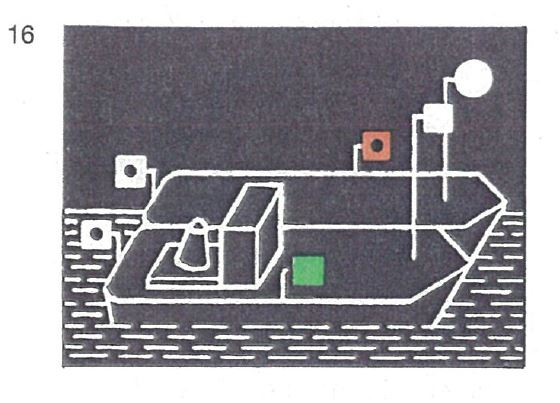 | |
| c) | auf jedem Fahrzeug ein Hecklicht auf dem Hinterschiff. | ||
| 2. | Dieser Paragraph ist weder auf Kleinfahrzeuge, die nur Kleinfahrzeuge längsseits gekuppelt führen, noch auf längsseits gekuppelte Kleinfahrzeuge anzuwenden; für diese Kleinfahrzeuge gilt § 3.13 Nr. 2 und 3. | ||
| 1. | Fahrzeuge unter Segel in Fahrt müssen bei Nacht führen: | ||
| a) | die Seitenlichter nach § 3.08 Nr. 1 Buchstabe b, jedoch können diese gewöhnliche Lichter sein; | ||
| b) | ein Hecklicht auf dem Hinterschiff. | ||
| 2. | Dieser Paragraph gilt nicht für Kleinfahrzeuge; für diese gilt § 3.13 Nr. 1, 4 und 6. | ||
| 1. | Einzeln fahrende Kleinfahrzeuge mit Maschinenantrieb müssen bei Nacht führen: | ||
| a) | ein Topplicht, jedoch hell statt stark, in gleicher Höhe wie die Seitenlichter und mindestens 1,00 m vor diesen; |  | |
| b) | Seitenlichter, die gewöhnliche Lichter sein dürfen. Sie müssen in gleicher Höhe und in einer Ebene senkrecht zur Längsachse des Fahrzeugs gesetzt sein und innenbords derart abgeblendet sein, daß das grüne Licht nicht von Backbord, das rote Licht nicht von Steuerbord gesehen werden kann; | ||
| c) | ein Hecklicht | ||
| oder | |||
| d) | das Topplicht nach Buchstabe a; dieses Licht muß jedoch mindestens 1,00 m höher als die Seitenlichter gesetzt sein; | ||
| e) | die Seitenlichter nach Buchstabe b; diese Lichter können jedoch unmittelbar nebeneinander oder in einer einzigen Laterne am oder nahe am Bug in der Schiffsachse gesetzt sein; | ||
| f) | ein Hecklicht; dieses Licht darf unter der Voraussetzung entfallen, daß anstelle des Topplichtes nach Buchstabe d ein von allen Seiten sichtbares weißes helles Licht geführt wird. | ||
| 2. | Schleppt ein Kleinfahrzeug ausschließlich Kleinfahrzeuge oder führt es nur solche längsseits gekuppelt, muß es bei Nacht die Lichter nach Nummer 1 führen. | ||
| 3. | Geschleppte oder längsseits gekuppelte Kleinfahrzeuge müssen bei Nacht ein von allen Seiten sichtbares weißes gewöhnliches Licht führen. Dies gilt nicht für die Beiboote der Fahrzeuge. | ||
| 4. | Einzeln fahrende Kleinfahrzeuge unter Segel müssen bei Nacht führen: |  | |
| entweder die Seitenlichter nach Nummer 1 Buchstabe b oder e und ein Hecklicht | |||
| oder diese Seitenlichter und das Hecklicht in einer einzigen Laterne am Topp | |||
| oder ein von allen Seiten sichtbares weißes gewöhnliches Licht und bei der Annäherung anderer Fahrzeuge außerdem ein zweites weißes gewöhnliches Licht zeigen. | |||
| 5. | Einzeln weder mit Maschinenantrieb noch unter Segel fahrende Kleinfahrzeuge müssen bei Nacht ein von allen Seiten sichtbares weißes gewöhnliches Licht führen. Beiboote, auf die die gleichen Voraussetzungen zutreffen, brauchen dieses Licht jedoch nur bei der Annäherung anderer Fahrzeuge zu zeigen. |  | |
| 6. | Ein Kleinfahrzeug unter Segel, das gleichzeitig mit einer Antriebsmaschine fährt, muß bei Tag führen: | ||
| einen schwarzen Kegel mit der Spitze nach unten, so hoch wie möglich an einer Stelle, an der er am besten sichtbar ist. | |||
| 1. | Fahrzeuge in Fahrt, die bestimmte entzündbare Stoffe nach ADNR befördern, müssen außer der anderen nach dieser Verordnung vorgeschriebenen Bezeichnung folgende Bezeichnung nach ADNR Nr. 7.1.5.0 oder 7.2.5.0 führen: | ||
| - | bei Nacht: | ||
| ein blaues Licht; | |||
| - | bei Tag: | ||
| einen blauen Kegel mit der Spitze nach unten. | |||
| Dieses Zeichen muss an einer geeigneten Stelle und so hoch geführt werden, dass sie von allen Seiten sichtbar ist; anstelle des blauen Kegels kann auch je ein blauer Kegel auf dem Vor- und Hinterschiff in einer Höhe von mindestens 3 m über der Ebene der Einsenkungsmarken geführt werden. | |||
| 2. | Fahrzeuge in Fahrt, die bestimmte gesundheitsschädliche Stoffe nach ADNR befördern, müssen außer der anderen nach dieser Verordnung vorgeschriebenen Bezeichnung folgende Bezeichnung nach ADNR Nr. 7.1.5.0 oder 7.2.5.0 führen: | ||
| - | bei Nacht: | ||
| zwei blaue Lichter; | |||
| - | bei Tag: | ||
| zwei blaue Kegel mit der Spitze nach unten. | |||
| Diese Zeichen müssen übereinander in einem Abstand von etwa 1 m an einer geeigneten Stelle und so hoch geführt werden, dass sie von allen Seiten sichtbar sind; anstelle der zwei blauen Kegel können auch je 2 blaue Kegel auf dem Vor- und Hinterschiff, von denen der untere in einer Höhe von mindestens 3 m über der Ebene der Einsenkungsmarken angebracht ist, geführt werden. | |||
| 3. | Fahrzeuge in Fahrt, die bestimmte explosive Stoffe nach ADNR befördern, müssen außer der anderen nach dieser Verordnung vorgeschriebenen Bezeichnung folgende Bezeichnung nach ADNR Nr. 7.1.5.0 oder 7.2.5.0 führen: | ||
| - | bei Nacht: | ||
| drei blaue Lichter; | |||
| - | bei Tag: | ||
| drei blaue Kegel mit der Spitze nach unten. | |||
| Diese Zeichen müssen übereinander in einem Abstand von jeweils etwa 1 m an einer geeigneten Stelle und so hoch geführt werden, dass sie von allen Seiten sichtbar sind. | |||
| 4. | Fährt oder fahren in einem Schubverband oder in einer Zusammenstellung gekuppelter Fahrzeuge ein Fahrzeug oder mehrere Fahrzeuge nach Nummer 1, 2 oder 3, muß die Bezeichnung nach Nummer 1, 2 oder 3 auf dem Fahrzeug geführt werden, das den Verband oder die Zusammenstellung fortbewegt. | ||
 | 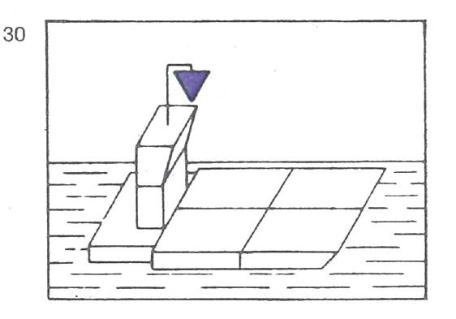 | ||
 |  | ||
| 5. | Schubverbände, die durch zwei schiebende Fahrzeuge nebeneinander fortbewegt werden, müssen die Bezeichnung nach Nummer 4 auf dem steuerbordseitigen, schiebenden Fahrzeug führen. | ||
 | 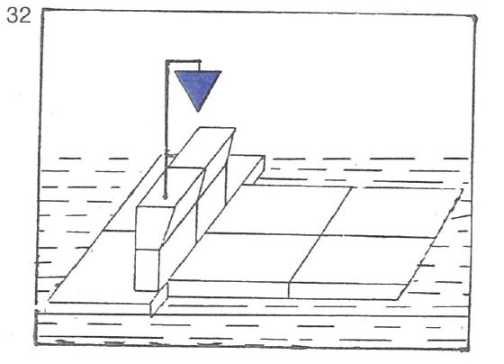 | ||
| 6. | Fahrzeuge, Schubverbände und gekuppelte Fahrzeuge, die verschiedene gefährliche Güter nach Nummer 1, 2 oder 3 zusammen befördern, führen die Bezeichnung für das gefährliche Gut, das die größte Anzahl der blauen Lichter oder blauen Kegel erfordert. | ||
| 7. | Fahrzeuge, die keine Bezeichnung nach Nummer 1, 2 oder 3 führen müssen, jedoch nach ADN Abschnitt 1.16.1 ein Zulassungszeugnis besitzen und die Sicherheitsbestimmungen einhalten, die für ein Fahrzeug nach Nummer 1 gelten, können bei der Annäherung an Schleusen die Bezeichnung nach Nummer 1 führen, wenn sie zusammen mit einem Fahrzeug geschleust werden wollen, das die Bezeichnung nach Nummer 1 führen muss. | ||
| 8. | Die Lichtstärke der in diesem Paragraphen vorgeschriebenen blauen Lichter muß mindestens derjenigen der gewöhnlichen blauen Lichter entsprechen. | ||
| Fahrzeuge, die zur Beförderung von mehr als 12 Fahrgästen zugelassen sind und deren Schiffskörper eine Höchstlänge von weniger als 20,00 m aufweist, müssen in Fahrt bei Tag führen: | |||
| einen gelben Doppelkegel an einer geeigneten Stelle und so hoch, daß er von allen Seiten sichtbar ist. | |||
| 1. | Nicht frei fahrende Fähren in Fahrt müssen bei Nacht führen: | ||
| a) | ein von allen Seiten sichtbares weißes helles Licht mindestens 5,00 m über der Ebene der Einsenkungsmarken; die Höhe darf jedoch verringert werden, wenn die Länge der Fähre 15,00 m nicht überschreitet; | ||
| b) | ein von allen Seiten sichtbares grünes helles Licht etwa 1,00 m über dem Licht nach Buchstabe a. | ||
| 2. | Bei Gierfähren am Längsseil in Fahrt muß bei Nacht der oberste Buchtnachen oder Döpper mit einem weißen hellen Licht mindestens 3,00 m über dem Wasser versehen sein. | ||
| 3. | Frei fahrende Fähren in Fahrt müssen bei Nacht führen: | ||
| a) | die Lichter nach Nummer 1; | ||
| b) | die Lichter nach § 3.08 Nr. 1 Buchstabe b und c. | ||
| Fahrzeuge, denen die zuständige Behörde zur Durchfahrt durch Stellen, an denen eine bestimmte Reihenfolge gilt, einen Vorrang eingeräumt hat, müssen in Fahrt außer der anderen nach dieser Verordnung vorgeschriebenen Bezeichnung bei Tag führen: | |||
| einen roten Wimpel auf dem Vorschiff und so hoch, dass er gut sichtbar ist. | |||
| Ein manövrierunfähiges Fahrzeug in Fahrt muss erforderlichenfalls außer der anderen nach dieser Verordnung vorgeschriebenen Bezeichnung | |||
| - | bei Nacht: | ||
| ein rotes Licht zeigen, das geschwenkt wird; | |||
| - | bei Tag: | ||
| eine rote Flagge zeigen, die geschwenkt wird, | |||
| oder | |||
| das vorgeschriebene Schallzeichen geben | |||
| oder | |||
| beides zugleich tun. | |||
| Die Flagge kann durch eine Tafel gleicher Farbe ersetzt werden. | |||
| Unbeschadet der besonderen Bedingungen, die nach § 1.21 festgelegt werden können, müssen Schwimmkörper und schwimmende Anlagen in Fahrt bei Nacht führen: | |||
| von allen Seiten sichtbare weiße helle Lichter in genügender Zahl, um ihre Umrisse kenntlich zu machen. | |||
| 1. | Mit Ausnahme der Kleinfahrzeuge und der in den §§ 3.22 und 3.25 genannten Fahrzeuge müssen alle Fahrzeuge beim Stilliegen bei Nacht führen: | ||
| ein von allen Seiten sichtbares weißes gewöhnliches Licht auf der Fahrwasserseite mindestens 3,00 m über der Ebene der Einsenkungsmarken. | |||
| Anstelle dieses Lichtes können auch zwei von allen Seiten sichtbare weiße gewöhnliche Lichter auf der Fahrwasserseite in gleicher Höhe auf dem Vor- und Hinterschiff gesetzt werden. | |||
| 2. | Kleinfahrzeuge - mit Ausnahme der Beiboote - müssen beim Stilliegen bei Nacht führen: | ||
| ein von allen Seiten sichtbares weißes gewöhnliches Licht auf der Fahrwasserseite. | |||
| 3. | Das in den Nummern 1 und 2 vorgeschriebene Licht braucht nicht geführt zu werden, | ||
| a) | wenn das Fahrzeug zu einer Zusammenstellung von Fahrzeugen gehört, die voraussichtlich nicht vor dem Ende der Nacht aufgelöst wird und die Fahrzeuge dieser Zusammenstellung auf der Fahrwasserseite das Licht nach Nummer 1 führen; | ||
| b) | wenn sich das Fahrzeug in vollem Umfang zwischen nicht überfluteten Buhnen befindet oder hinter einem aus dem Wasser ragenden Längswerk stilliegt; | ||
| c) | wenn das Fahrzeug am Ufer stilliegt und von diesem aus hinreichend beleuchtet ist. | ||
| 4. | Sind Fahrzeuge an einer besonders dafür ausgewiesenen Stelle zusammengezogen, kann die zuständige Behörde in Sonderfällen einen Teil von ihnen von der Lichterführung nach Nummer 1 oder 2 befreien. | ||
| § 3.14 gilt für die dort genannten Fahrzeuge, Schubverbände und gekuppelten Fahrzeuge auch beim Stilliegen. | |||
| 1. | Nicht frei fahrende Fähren müssen bei Nacht beim Stilliegen an ihrer Anlegestelle die Lichter nach § 3.16 Nr. 1 führen. | ||
| Außerdem muß bei Gierfähren am Längsseil bei Nacht der oberste Buchtnachen oder Döpper das Licht nach § 3.16 Nr. 2 führen. | |||
| 2. | Frei fahrende Fähren während des Betriebs bei Nacht müssen beim Stilliegen an ihrer Anlegestelle die Lichter nach § 3.16 Nr. 1 führen; sie dürfen außerdem die Lichter nach § 3.08 Nr. 1 Buchstabe b und c beibehalten. | ||
| Diese Fahrer müssen das grüne Licht nach § 3.16 Nr. 1 Buchstabe b sowie die Lichter nach § 3.08 Nr. 1 Buchstabe b und c löschen, sobald sie nicht mehr in Betrieb sind. | |||
| Unbeschadet der besonderen Bedingungen, die nach § 1.21 festgelegt werden können, müssen Schwimmkörper und schwimmende Anlagen beim Stillliegen bei Nacht führen: | |||
| von allen Seiten sichtbare weiße gewöhnliche Lichter in genügender Zahl, um ihre Umrisse zur Fahrwasserseite hin kenntlich zu machen. | |||
| Die in Satz 1 vorgeschriebenen Lichter brauchen nicht geführt zu werden, wenn die Voraussetzungen des § 3.20 Nr. 3 Buchstabe b oder c erfüllt sind. | |||
| Fischereifahrzeuge, Kleinfahrzeuge eingeschlossen, die ihre Netze oder Ausleger im Fahrwasser oder in dessen Nähe ausgelegt haben, müssen beim Stilliegen bei Nacht führen: | |||
| das Licht nach § 3.20 Nr. 1. | |||
| Außerdem müssen ihre Netze oder Ausleger bezeichnet sein: | |||
| - | bei Nacht: | ||
| durch von allen Seiten sichtbare weiße gewöhnliche Lichter in ausreichender Zahl, um ihre Lage kenntlich zu machen; | |||
| - | bei Tag: | ||
| durch gelbe Döpper in ausreichender Zahl, um ihre Lage kenntlich zu machen. | |||
| 1. | Schwimmende Geräte bei der Arbeit und Fahrzeuge, die im Fahrwasser Arbeiten, Peilungen oder Messungen ausführen und dabei stillliegen, müssen führen: | ||
| a) | nach der Seite oder den Seiten, wo die Durchfahrt frei ist: | ||
| - bei Nacht: | |||
| zwei grüne gewöhnliche Lichter oder zwei grüne helle Lichter, |  | ||
| - bei Tag: | |||
| entweder das Tafelzeichen E.1 (Anlage 7) oder zwei grüne Doppelkegel etwa 1,00 m übereinander und gegebenenfalls | |||
 | |||
| b) | nach der Seite, wo die Durchfahrt nicht frei ist: | ||
| - bei Nacht: |  | ||
| ein rotes gewöhnliches Licht oder ein rotes helles Licht in gleicher Höhe und von gleicher Stärke wie das nach Buchstabe a gezeigte oberste grüne Licht, | |||
| - bei Tag: | |||
| entweder das Tafelzeichen A.1 (Anlage 7) in gleicher Höhe wie das Tafelzeichen nach Buchstabe a | |||
| oder einen roten Ball in gleicher Höhe wie der oberste Doppelkegel nach Buchstabe a, | |||
| oder, wenn diese Fahrzeuge gegen Wellenschlag geschützt werden müssen, | |||
| c) | nach der Seite oder den Seiten, wo die Durchfahrt frei ist: | ||
| - bei Nacht: | |||
| ein rotes gewöhnliches und ein weißes gewöhnliches Licht oder ein rotes helles und ein weißes helles Licht, das rote Licht etwa 1,00 m über dem weißen, | |||
| - bei Tag: |  | ||
| eine Flagge, deren obere Hälfte rot und deren untere Hälfte weiß ist, oder zwei Flaggen übereinander, die obere rot, die untere weiß, und gegebenenfalls | |||
| d) | nach der Seite, wo die Durchfahrt nicht frei ist: | ||
| - bei Nacht: | |||
| ein rotes Licht in gleicher Höhe und von gleicher Stärke wie das nach Buchstabe c gezeigte rote Licht, | |||
| - bei Tag: | |||
| eine rote Flagge in gleicher Höhe wie die rot-weiße Flagge oder die rote Flagge auf der anderen Seite. | |||
| Diese Zeichen sind so hoch zu setzen, daß sie von allen Seiten sichtbar sind. Die Flaggen können durch Tafeln gleicher Farbe ersetzt werden. | |||
| 2. | Festgefahrene oder gesunkene Fahrzeuge müssen die Bezeichnung nach Nummer 1 Buchstabe c und d führen. Liegt ein gesunkenes Fahrzeug so, dass die Zeichen nicht auf ihm angebracht werden können, müssen sie auf Nachen, Tonnen oder in anderer geeigneter Weise gesetzt werden. | ||
| 3. | Die zuständige Behörde kann von der Führung der Bezeichnung nach Nummer 1 Buchstabe a und b befreien. | ||
| 1. | Stilliegende Fahrzeuge, deren Anker so ausgeworfen sind, daß die Anker, Ankerkabel oder Ankerketten die Schiffahrt gefährden können, müssen außer den anderen nach dieser Verordnung vorgeschriebenen Lichtern bei Nacht führen: | ||
| ein von allen Seiten sichtbares zusätzliches weißes gewöhnliches Licht etwa 1,00 m unter dem Licht nach § 3.20 Nr. 1 oder, wenn zwei Stilliegelichter gesetzt sind, unter dem Licht, das dem Anker am nächsten liegt. | |||
| 2. | Wenn in den Fällen des § 3.23 die Anker so ausgeworfen sind, daß sie die Schiffahrt gefährden können, muß das diesen Ankern nächstgelegene Licht ersetzt werden durch | ||
| zwei von allen Seiten sichtbare weiße gewöhnliche Lichter, die in einem Abstand von etwa 1,00 m übereinander angebracht sind. | |||
| 3. | In den Fällen der Nummern 1 und 2 ist jeder dieser Anker bei Nacht und bei Tag mit einem gelben Döpper mit Radarreflektor zu bezeichnen. | ||
 | |||
| 4. | Wenn die Anker, Ankerkabel oder Ankerketten schwimmender Geräte die Schiffahrt gefährden können, sind sie zu bezeichnen: | ||
| - | bei Nacht | ||
| durch einen Döpper mit Radarreflektor und einem von allen Seiten sichtbaren weißen gewöhnlichen Licht, | |||
| - | bei Tag: | ||
| durch einen gelben Döpper mit Radarreflektor. | |||
| Fahrzeuge der Überwachungsbehörden können bei Nacht und bei Tag ein blaues Funkellicht zeigen, um sich kenntlich zu machen. Dies gilt auch für Feuerlöschboote, wenn sie zur Hilfeleistung eingesetzt werden, und für Wasserrettungsfahrzeuge im Rettungseinsatz mit Erlaubnis der zuständigen Behörde. | |||
| In Fahrt befindliche Fahrzeuge, die im Fahrwasser Arbeiten, Peilungen oder Messungen ausführen, können mit Erlaubnis der zuständigen Behörde bei Nacht und bei Tag außer der anderen nach dieser Verordnung vorgeschriebenen Bezeichnung zeigen: | |||
| ein von allen Seiten sichtbares gelbes gewöhnliches Funkellicht oder ein von allen Seiten sichtbares gelbes helles Funkellicht. | |||
| 1. | In Fahrt befindliche oder stilliegende Fahrzeuge, Schwimmkörper und schwimmende Anlagen, die gegen Wellenschlag vorbeifahrender Fahrzeuge oder Schwimmkörper geschützt werden wollen, können außer ihrer Bezeichnung nach diesem Kapitel führen: | ||
| - | bei Nacht: | ||
| ein rotes gewöhnliches und ein weißes gewöhnliches Licht oder ein rotes helles und ein weißes helles Licht, das rote Licht etwa 1,00 m über dem weißen, an einer Stelle, an der sie gut gesehen und nicht mit anderen Lichtern verwechselt werden können; | |||
| - | bei Tag: | ||
| eine Flagge, deren obere Hälfte rot und deren untere Hälfte weiß ist, an einer geeigneten Stelle und so hoch, daß sie von allen Seiten sichtbar ist. Die Flagge kann durch zwei Flaggen übereinander, die obere rot, die untere weiß, ersetzt werden. Die Flaggen können durch Tafeln gleicher Farbe ersetzt werden. | |||
| 2. | Von der Bezeichnung nach Nummer 1 dürfen nur Gebrauch machen: | ||
| a) | Fahrzeuge, Schwimmkörper und schwimmende Anlagen, die schwer beschädigt sind oder die sich an Rettungsarbeiten beteiligen sowie manövrierunfähige Fahrzeuge; | ||
| b) | Fahrzeuge, Schwimmkörper und schwimmende Anlagen mit schriftlicher Erlaubnis der zuständigen Behörde. | ||
| § 3.25 bleibt unberührt. | |||
| 1. | Ein in Not befindliches Fahrzeug, das Hilfe durch Sichtzeichen herbeirufen will, kann zeigen: | ||
| - | bei Nacht: | ||
| ein Licht, das im Kreis geschwenkt wird; | |||
| - | bei Tag: | ||
| eine rote Flagge, die im Kreis geschwenkt wird, oder einen sonstigen geeigneten Gegenstand, der im Kreis geschwenkt wird. | |||
| 2. | Diese Zeichen ersetzen oder ergänzen die Schallzeichen nach § 4.04. | ||
| 1. | Sofern es nicht an Bord beschäftigten Personen durch andere Vorschriften verboten ist, das Fahrzeug zu betreten, muss dieses Verbot angezeigt werden durch | ||
| runde weiße Symbole mit rotem Rand, rotem Schrägstrich und einem schwarzen Sinnbild der abwehrenden Hand. | |||
| Die Symbole sind je nach Bedarf an Bord oder am Laufsteg aufzustellen. | |||
| Ihr Durchmesser muss etwa 0,60 m betragen. | |||
| 2. | Die Symbole müssen erforderlichenfalls beleuchtet werden, damit sie bei Nacht deutlich sichtbar sind. | ||
| 3. | Die Symbole, die nach der am 30. November 2011 gültigen Fassung der Rheinschifffahrtspolizeiverordnung vorgeschrieben waren, dürfen bis zum 30. November 2015 verwendet werden. | ||
| 1. | Sofern es durch andere Vorschriften verboten ist, an Bord | ||
| a) | zu rauchen, | ||
| b) | ungeschütztes Licht oder Feuer zu verwenden, | ||
| muss dieses Verbot angezeigt werden durch | |||
| runde weiße Symbole mit rotem Rand und rotem Schrägstrich, auf denen ein brennendes Streichholz abgebildet ist. | |||
| Die Symbole sind je nach Bedarf an Bord oder am Laufsteg aufzustellen. | |||
| Ihr Durchmesser muss etwa 0,60 m betragen. | |||
| 2. | Die Symbole müssen erforderlichenfalls beleuchtet werden, damit sie bei Nacht deutlich sichtbar sind. | ||
| 3. | Die Symbole, die nach der am 30. November 2011 gültigen Fassung der Rheinschifffahrtspolizeiverordnung vorgeschrieben waren, dürfen bis zum 30. November 2015 verwendet werden. | ||
| 1. | Sofern das seitliche Stilliegen in der Nähe eines Fahrzeugs zum Beispiel wegen der Art seiner Ladung durch andere Vorschriften oder durch besondere Anordnungen der zuständigen Behörde verboten ist, muß dieses Fahrzeug an Deck in der Längsebene führen: | ||
| eine quadratische Tafel, darunter eine dreieckige Zusatztafel. | |||
| Die quadratische Tafel ist auf beiden Seiten weiß mit rotem Rand und trägt einen roten Schrägstrich von links oben nach rechts unten und ein schwarzes "P" im Mittelfeld. Die dreieckige Zusatztafel ist auf beiden Seiten weiß und zeigt in schwarzen Zahlen die Entfernung in Metern an, innerhalb derer das Stilliegen verboten ist. | |||
| 2. | Bei Nacht müssen die Tafeln so beleuchtet sein, daß sie an beiden Seiten des Fahrzeugs deutlich sichtbar sind. | ||
| 3. | Dieser Paragraph gilt nicht für die in § 3.21 genannten Fahrzeuge, Schubverbände und gekuppelten Fahrzeuge. | ||
| 1. | Beim Begegnen müssen die Bergfahrer unter Berücksichtigung der örtlichen Umstände und des übrigen Verkehrs den Talfahrern einen geeigneten Weg frei lassen. | ||
| 2. | Bergfahrer, die Talfahrer an Backbord vorbeifahren lassen, geben kein Zeichen. | ||
| 3. | Bergfahrer, die Talfahrer an Steuerbord vorbeifahren lassen, müssen rechtzeitig nach Steuerbord zeigen: | ||
| a) | bei Nacht: | ||
| ein weißes helles Funkellicht, das auch mit einer hellblauen Tafel gekoppelt sein darf, | |||
| b) | bei Tag: | ||
| eine hellblaue Tafel, die mit einem weißen hellen Funkellicht gekoppelt ist. |  | ||
| Die hellblaue Tafel muß einen weißen Rand von mindestens 5 cm Breite haben, Rahmen und Gestänge sowie die Leuchte des Funkellichtes dürfen nur von dunkler Farbe sein. Diese Zeichen müssen von vorn und von hinten sichtbar sein und bis zur Beendigung der Vorbeifahrt gezeigt werden. Sie dürfen nicht länger beibehalten werden, es sei denn, daß die Bergfahrer ihre Absicht anzeigen wollen, auch weiterhin Talfahrer an Steuerbord vorbeifahren zu lassen. | |||
| 4. | Ist zu befürchten, daß die Absicht der Bergfahrer von den Talfahrern nicht verstanden worden ist, müssen die Bergfahrer folgende Zeichen geben: | ||
| "einen kurzen Ton", wenn die Vorbeifahrt an Backbord stattfinden soll, oder "zwei kurze Töne", wenn die Vorbeifahrt an Steuerbord stattfinden soll. | |||
| 5. | Unbeschadet des § 6.05 müssen die Talfahrer den Weg nehmen, den ihnen die Bergfahrer nach den vorstehenden Bestimmungen weisen; sie müssen die Sichtzeichen nach Nummer 3 und die Schallzeichen nach Nummer 4 erwidern, die die Bergfahrer an sie gerichtet haben. | ||
| 1. | Bei der Annäherung an Strecken, die durch das Tafelzeichen A.4 (Anlage 7) gekennzeichnet sind, ist das Begegnen und Überholen verboten. Das Verbot nach Satz 1 kann auf Fahrzeuge und Verbände ab einer bestimmten Länge oder Breite beschränkt werden; in diesem Fall werden die Länge oder Breite auf einer rechteckigen weißen zusätzlichen Tafel angegeben, die unterhalb des Tafelzeichens A.4 angebracht ist. Im Übrigen gelten die Regelungen des § 6.07 Nr. 1 Buchstabe a bis d entsprechend. |  | |
| 2. | Wenn die zuständige Behörde auf einer bestimmten Strecke das Begegnen dadurch ausschließt, daß sie die Durchfahrt jeweils nur in einer Richtung gestattet, bedeutet | ||
| ein allgemeines Zeichen A.1 (Anlage 7): |  | ||
| keine Durchfahrt, | |||
| ein allgemeines Zeichen E.1 (Anlage 7): | |||
| Durchfahrt frei. | |||
| je nach den örtlichen Umständen kann das Zeichen, das die Durchfahrt verbietet, durch das als Vorwarnzeichen verwendete Tafelzeichen B.8 (Anlage 7) angekündigt werden. | |||
| Unbeschadet des § 6.08 Nr. 1 besteht | |||
| a) | auf Strecken, deren Grenzen durch das Tafelzeichen A.2 (Anlage 7) gekennzeichnet sind, ein allgemeines Überholverbot, | ||
| b) | auf Strecken, deren Grenzen durch das Tafelzeichen A.3 (Anlage 7) gekennzeichnet sind, ein Überholverbot für Verbände untereinander. Dies gilt nicht, wenn einer der Verbände ein Schubverband ist, dessen Länge 110,00 m und dessen Breite 12,00 m nicht überschreiten. | ||
| Auf Strecken, die mit einem der Tafelzeichen B.1, B.2a, B.2b, B.3a, B.3b, B.4a oder B.4b (Anlage 7) bezeichnet sind, müssen die Fahrzeuge dem durch das Tafelzeichen vorgeschriebenen Kurs folgen. | |||
| 1. | Fahrzeuge dürfen nur wenden, nachdem sie sich vergewissert haben, daß der übrige Verkehr unter Berücksichtigung der nachstehenden Nummern 2 und 3 dies ohne Gefahr zuläßt und andere Fahrzeuge nicht gezwungen werden, unvermittelt ihren Kurs oder ihre Geschwindigkeit zu ändern. | ||
| 2. | Sofern das beabsichtigte Manöver andere Fahrzeuge dazu zwingt oder zwingen kann, von ihrem Kurs abzuweichen oder ihre Geschwindigkeit zu ändern, muß das Fahrzeug, das wenden will, seine Absicht rechtzeitig wie folgt ankündigen: | ||
| a) | durch "einen langen Ton, einen kurzen Ton", wenn es über Steuerbord wenden will, | ||
| b) | durch "einen langen Ton, zwei kurze Töne", wenn es über Backbord wenden will. | ||
| 3. | Die anderen Fahrzeuge müssen daraufhin, sofern dies nötig und möglich ist, ihre Geschwindigkeit und ihren Kurs ändern, damit das Wenden ohne Gefahr geschehen kann. | ||
| 4. | Auf den durch das Tafelzeichen A.8 (Anlage 7) gekennzeichneten Strecken ist das Wenden verboten. | ||
| Sind hingegen Strecken durch das Tafelzeichen E.8 (Anlage 7) gekennzeichnet, so wird dem Schiffsführer empfohlen, dort zu wenden, wobei dieser Paragraph zu beachten ist. | |||
| 1. | Fahrzeuge dürfen aus einem Hafen oder einer Nebenwasserstraße nur ausfahren und in die Hauptwasserstraße einbiegen oder die Hauptwasserstraße überqueren oder in einen Hafen oder eine Nebenwasserstraße nur einfahren, nachdem sie sich vergewissert haben, daß diese Manöver ausgeführt werden können, ohne daß eine Gefahr entsteht und ohne daß andere Fahrzeuge unvermittelt ihren Kurs oder ihre Geschwindigkeit ändern müssen. Ein Talfahrer, der zur Einfahrt in einen Hafen oder in eine Nebenwasserstraße aufdrehen muß, hat einem Bergfahrer, der ebenfalls einfahren will, die Vorfahrt zu lassen. | ||
| Wasserstraßen, die als Nebenwasserstraßen zu betrachten sind, können durch ein Tafelzeichen E.9 oder E.10 (Anlage 7) gekennzeichnet sein. | |||
| 2. | Fahrzeuge - ausgenommen Fähren -, die ein Manöver im Sinne der Nummer 1 beabsichtigen, das andere Fahrzeuge dazu zwingt oder zwingen kann, ihren Kurs oder ihre Geschwindigkeit zu ändern, müssen ihre Absicht rechtzeitig wie folgt ankündigen: | ||
| a) | durch "drei lange Töne, einen kurzen Ton", wenn sie vor der Einfahrt oder nach der Ausfahrt ihren Kurs nach Steuerbord richten wollen; | ||
| b) | durch "drei lange Töne, zwei kurze Töne", wenn sie vor der Einfahrt oder nach der Ausfahrt ihren Kurs nach Backbord richten wollen; | ||
| c) | durch "drei lange Töne", wenn sie nach der Ausfahrt die Wasserstraße überqueren wollen; vor Beendigung der Querfahrt müssen sie erforderlichenfalls geben: | ||
| "einen langen Ton, einen kurzen Ton", wenn sie ihren Kurs nach Steuerbord richten wollen, | |||
| "einen langen Ton, zwei kurze Töne", wenn sie ihren Kurs nach Backbord richten wollen. | |||
| Die anderen Fahrzeuge müssen daraufhin, soweit notwendig, ihren Kurs und ihre Geschwindigkeit ändern. | |||
| 3. | Ist an der Ausfahrt eines Hafens oder an der Mündung einer Nebenwasserstraße ein Tafelzeichen B.9a oder B.9b (Anlage 7) angebracht, dürfen die aus dem Hafen oder aus der Nebenwasserstraße kommenden Fahrzeuge in die Hauptwasserstraße nur einbiegen oder sie überqueren, wenn dadurch die Fahrzeuge auf der Hauptwasserstraße nicht gezwungen werden, Kurs oder Geschwindigkeit zu ändern. | ||
| 4. | Ein rotes Licht (Zeichen A.1, Anlage 7) mit einem weißen Pfeil (Abschnitt II Nr. 2 Buchstabe c, Anlage 7) zeigt an, daß die Einfahrt in den in Pfeilrichtung gelegenen Hafen oder in die in Pfeilrichtung gelegene Nebenwasserstraße verboten ist. | ||
| 1. | Es ist verboten, Anker, Trossen oder Ketten schleifen zu lassen. | ||
| 2. | Das Verbot nach Nummer 1 gilt weder beim Treibenlassen, sofern dies gestattet ist, noch für kleine Bewegungen auf Liegestellen, Lade- und Löschplätzen sowie auf Reeden; es gilt jedoch für derartige Bewegungen auf Strecken, die nach § 7.03 Nr. 1 Buchstabe b durch das Tafelzeichen A.6 (Anlage 7) gekennzeichnet sind. | ||
| 1. | Fahrzeuge müssen ihre Geschwindigkeit so einrichten, daß Wellenschlag oder Sogwirkungen, die Schäden an stilliegenden oder in Fahrt befindlichen Fahrzeugen oder Schwimmkörpern oder an Anlagen verursachen können, vermieden werden. Sie müssen ihre Geschwindigkeit rechtzeitig vermindern, jedoch nicht unter das Maß, das zu ihrer sicheren Steuerung notwendig ist: | ||
| a) | vor Hafenmündungen; | ||
| b) | in der Nähe von Fahrzeugen, die am Ufer oder an Landebrücken festgemacht sind oder die laden oder löschen; | ||
| c) | in der Nähe von Fahrzeugen, die auf den üblichen Liegestellen stilliegen: | ||
| d) | in der Nähe nicht frei fahrender Fähren; | ||
| e) | auf Strecken der Wasserstraße, die durch das Zeichen A.9 (Anlage 7) gekennzeichnet sind. | ||
| 2. | Gegenüber Kleinfahrzeugen besteht die Verpflichtung nach Nummer 1 Satz 2 Buchstabe b und c nicht; § 1.04 bleibt unberührt. | ||
| 3. | Beim Vorbeifahren an Fahrzeugen, die die Bezeichnung nach § 3.25 Nr. 1 Buchstabe c führen, | ||
| und an Fahrzeugen, Schwimmkörpern oder schwimmenden Anlagen, die die Bezeichnung nach § 3.29 Nr. 1 führen, | |||
| müssen andere Fahrzeuge ihre Geschwindigkeit, wie in Nummer 1 vorgeschrieben, vermindern. Sie haben außerdem möglichst weiten Abstand zu halten. | |||
| Es ist verboten, an den in § 3.25 genannten Fahrzeugen an der Seite vorbeizufahren, an der sie | |||
| das rote Licht oder die roten Lichter nach § 3.25 Nr. 1 Buchstabe b und d oder das Tafelzeichen A.1 (Anlage 7), den roten Ball |  |  | |
| oder die rote Flagge nach § 3.25 Nr. 1 Buchstabe b und d |  | ||
| zeigen. | |||
| 1. | In einer Brücken- oder Wehröffnung gilt § 6.07, es sei denn, das Fahrwasser gewährt hinreichenden Raum für die gleichzeitige Durchfahrt. | ||
| 2. | Ist eine Brücken- oder Wehröffnung gekennzeichnet | ||
| a) | durch das Tafelzeichen A.10 (Anlage 7), ist die Schiffahrt in dieser Öffnung außerhalb des durch die beiden Tafeln dieses Zeichens begrenzten Raumes verboten; | ||
| b) | durch das Tafelzeichen D.2 (Anlage 7), wird der Schiffahrt empfohlen, sich in dieser Öffnung in dem durch die beiden Tafeln dieses Zeichens begrenzten Raum zu halten. | ||
| 1. | Sind bestimmte Öffnungen fester Brücken durch ein allgemeines Zeichen A.1 (Anlage 7) gekennzeichnet, ist das Durchfahren dieser Öffnungen verboten. | ||
| 2. | Sind bestimmte Öffnungen fester Brücken gekennzeichnet | ||
| a) | durch das Tafelzeichen D.1a (Anlage 7) | ||
| oder | |||
| b) | durch das Tafelzeichen D.1b (Anlage 7) - angebracht über der Brückenöffnung -, | ||
| wird empfohlen, vorzugsweise diese Öffnungen zu benutzen. | |||
| Ist die Öffnung nach Buchstabe a gekennzeichnet, ist die Durchfahrt in beiden Richtungen erlaubt; ist sie nach Buchstabe b gekennzeichnet, ist die Durchfahrt in Gegenrichtung verboten. | |||
| 3. | Sind bestimmte Öffnungen fester Brücken nach Nummer 2 gekennzeichnet, kann die Schiffahrt die nicht gekennzeichneten Öffnungen nur auf eigene Gefahr benutzen. | ||
| 1. | Das Verbot, eine Wehröffnung zu durchfahren, kann durch ein allgemeines Zeichen A.1 (Anlage 7) angezeigt werden. | ||
| 2. | Das Durchfahren einer Wehröffnung ist nur gestattet, wenn diese links und rechts durch ein allgemeines Zeichen E.1 (Anlage 7) gekennzeichnet ist. | ||
| 1. | Bei der Annäherung an die Schleusenvorhäfen müssen die Fahrzeuge ihre Fahrt verlangsamen. Können oder wollen sie nicht sogleich in die Schleuse einfahren, haben sie, wenn am Ufer das Tafelzeichen B.5 (Anlage 7) aufgestellt ist, vor diesem anzuhalten. |  | |
| 2. | In den Schleusenvorhäfen und in den Schleusen müssen Fahrzeuge, die mit einer Sprechfunkanlage für den Verkehrskreis Nautische Information ausgerüstet sind, den Kanal der Schleuse auf Empfang geschaltet haben. | ||
| 3. | Geschleust wird in der Reihenfolge des Eintreffens in den Schleusenvorhäfen. Kleinfahrzeuge sind nicht berechtigt, eine besondere Schleusung zu verlangen. Sie dürfen erst nach Aufforderung durch die Schleusenaufsicht in die Schleuse einfahren. Außerdem dürfen die Kleinfahrzeuge, wenn sie gemeinsam mit anderen Fahrzeugen geschleust werden, erst nach diesen in die Schleuse einfahren. | ||
| 4. | Bei der Annäherung an die Schleusen, insbesondere in den Schleusenvorhäfen, ist das Überholen verboten. | ||
| 5. | In den Schleusen müssen die Anker vollständig hochgenommen sein. Das gilt auch in den Schleusenvorhäfen, solange die Anker nicht benutzt werden. | ||
| 6. | Bei der Einfahrt in die Schleusen müssen die Fahrzeuge ihre Geschwindigkeit so vermindern, daß ein Anprall an die Schleusentore oder an die Schutzvorrichtungen sowie an andere Fahrzeuge oder an Schwimmkörper vermieden wird. | ||
| 7. | In den Schleusen | ||
| a) | haben sich die Fahrzeuge, sofern an den Schleusenwänden Grenzen markiert sind, innerhalb dieser Grenzen zu halten; | ||
| b) | müssen die Fahrzeuge während der Füllung und der Entleerung der Schleusenkammer und bis zur Freigabe der Ausfahrt festgemacht sein und die Befestigungsmittel derart bedient werden, daß Stöße gegen die Schleusenwände, die Schleusentore oder die Schutzvorrichtungen sowie gegen die anderen Fahrzeuge oder Schwimmkörper vermieden werden; | ||
| c) | sind Fender zu verwenden, die schwimmfähig sein müssen, wenn sie nicht fest mit dem Fahrzeug verbunden sind; | ||
| d) | ist es verboten, von den Fahrzeugen oder Schwimmkörpern Wasser auf die Schleusenplattformen, auf die anderen Fahrzeuge oder Schwimmkörper zu schütten oder ausfließen zu lassen; | ||
| e) | ist es verboten, nach dem Festmachen des Fahrzeugs bis zur Freigabe der Ausfahrt den Maschinenantrieb zu benutzen; | ||
| f) | müssen Kleinfahrzeuge Abstand zu den anderen Fahrzeugen halten. | ||
| 8. | In den Schleusenvorhäfen und in den Schleusen muss zu Fahrzeugen und Verbänden, die die Bezeichnung nach § 3.14 Nr. 1 führen, ein seitlicher Abstand von mindestens 10 m eingehalten werden. Das gilt jedoch nicht für Fahrzeuge und Verbände, die die gleiche Bezeichnung führen und für die in § 3.14 Nr. 7 genannten Fahrzeuge. | ||
| 9. | Fahrzeuge und Verbände, die eine Bezeichnung nach § 3.14 Nr. 2 oder 3 führen, werden allein geschleust. | ||
| 10. | Fahrzeuge und Verbände, die das Kennzeichen nach § 2.06 tragen, dürfen nicht in eine Schleuse einfahren, wenn es außerhalb des LNG-Systems zu Freisetzungen von Flüssigerdgas (LNG) kommt oder wenn eine Freisetzung von Flüssigerdgas (LNG) außerhalb des LNG-Systems während der Schleusendurchfahrt zu erwarten ist. | ||
| 11. | Fahrzeuge und Verbände, die die Bezeichnung nach § 3.14 Nr. 1 führen, werden nicht zusammen mit Fahrgastschiffen geschleust. | ||
| 12. | Bei der Annäherung an die Schleusenvorhäfen, bei der Schleusung und dem Verlassen der Schleuse müssen die schnellen Schiffe ihre Geschwindigkeit so weit herabsetzen, dass jeder Schaden an Schleusen, Fahrzeugen oder schwimmenden Geräten und jede Gefahr für Personen an Bord der anderen Fahrzeuge oder schwimmenden Geräte oder an Land durch Wellenschlag vermieden wird. | ||
| 13. | Die Schleusenaufsicht kann aus Gründen der Sicherheit und Leichtigkeit des Verkehrs, zur Beschleunigung der Durchfahrt oder zur vollen Ausnutzung der Schleusen Anordnungen erteilen, die diesen Paragraphen ergänzen oder von ihm abweichen. Die Fahrzeuge haben diese Anordnungen in den Schleusen und in den Schleusenvorhäfen zu befolgen. | ||
| 1. | Die Einfahrt in die Schleuse wird bei Tag und bei Nacht durch Signallichter geregelt, die auf einer Seite oder auf beiden Seiten der Schleuse gezeigt werden. Diese Signallichter haben folgende Bedeutung: | ||
| a) | Die Einfahrt in die Schleuse wird bei Tag und bei Nacht durch Signallichter geregelt, die auf einer Seite oder auf beiden Seiten der Schleuse gezeigt werden. | ||
| Einfahrt verboten, Schleuse außer Betrieb; | |||
| b) | ein rotes Licht oder zwei rote Lichter nebeneinander: | ||
| Einfahrt verboten, Schleuse geschlossen; | |||
| c) | das Erlöschen eines der beiden nebeneinander gezeigten roten Lichter oder ein rotes und ein grünes Licht nebeneinander: | ||
| Einfahrt verboten, Öffnung der Schleuse wird vorbereitet; | |||
| d) | ein grünes Licht oder zwei grüne Lichter nebeneinander: | ||
| Einfahrt erlaubt. | |||
| 2. | Die Ausfahrt aus der Schleuse wird bei Nacht und bei Tag durch folgende Signallichter geregelt: | ||
| a) | ein rotes Licht oder zwei rote Lichter: | ||
| Ausfahrt verboten; | |||
| b) | ein grünes Licht oder zwei grüne Lichter: | ||
| Ausfahrt erlaubt. | |||
| 3. | Anstelle des roten Lichtes oder der roten Lichter nach den Nummern 1 und 2 kann das Tafelzeichen A.1 (Anlage 7), anstelle des grünen Lichtes oder der grünen Lichter nach den Nummern 1 und 2 kann das Tafelzeichen E.1 (Anlage 7) gesetzt werden. | ||
| 4. | Werden keine Signallichter oder keine Tafelzeichen gezeigt, ist die Einfahrt in die Schleuse oder die Ausfahrt aus der Schleuse ohne besondere Anordnung der Schleusenaufsicht verboten. | ||
| 1. | Fahrzeuge und Schwimmkörper sowie schwimmende Anlagen dürfen nicht stilliegen | ||
| a) | auf den Abschnitten der Wasserstraße, für die ein allgemeines Stilliegeverbot besteht; | ||
| b) | auf den von der zuständigen Behörde bekanntgegebenen Strecken; | ||
| c) | auf den durch das Tafelzeichen A.5 (Anlage 7) gekennzeichneten Strecken, auf der Seite der Wasserstraße, auf der das Tafelzeichen steht; | 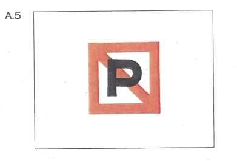 | |
| d) | unter Brücken und Hochspannungsleitungen; | ||
| e) | in Fahrwasserengen im Sinne des § 6.07 und in ihrer Nähe sowie auf Strecken, die durch das Stilliegen zu Fahrwasserengen werden würden, und in der Nähe solcher Strecken; | ||
| f) | an den Einfahrten in und den Ausfahrten aus Häfen und Nebenwasserstraßen; | ||
| g) | in der Fahrlinie von Fähren; | ||
| h) | im Kurs, den Fahrzeuge beim Anlegen an Landebrücken und beim Abfahren benutzen; | ||
| i) | auf Wendestellen, die durch das Tafelzeichen E.8 (Anlage 7) gekennzeichnet sind; | 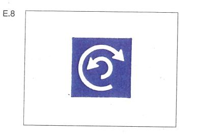 | |
| k) | seitlich neben einem Fahrzeug, das das Tafelzeichen nach § 3.33 führt, innerhalb des Abstandes, der auf der dreieckigen weißen Zusatztafel in Metern angegeben ist; | 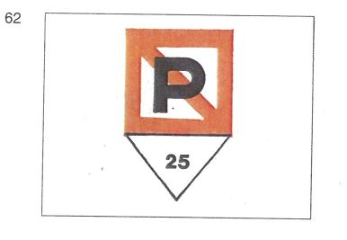 | |
| l) | auf den durch das Tafelzeichen A.5.1 (Anlage 7) gekennzeichneten Wasserflächen, deren Breite auf dem Tafelzeichen in Metern angegeben ist. Die Breite bemißt sich vom Aufstellungsort des Tafelzeichens. |  | |
| 2. | Auf den Abschnitten, auf denen das Stilliegen nach Nummer 1 Buchstabe a bis d verboten ist, dürfen Fahrzeuge und Schwimmkörper sowie schwimmende Anlagen nur auf den Liegestellen stilliegen, die durch eines der Tafelzeichen E.5 bis E.7 (Anlage 7) gekennzeichnet sind. Dabei sind die §§ 7.03, 7.04, 7.05 und 7.06 zu beachten. | ||
 | 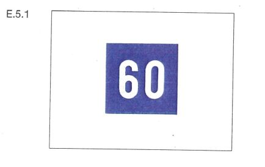 | ||
| 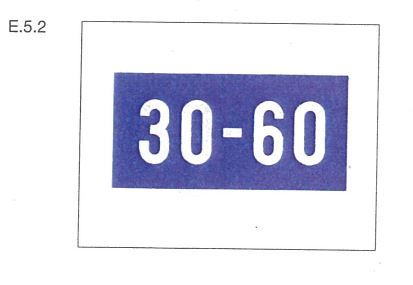 |  | ||
 | 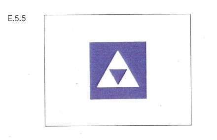 | ||
| 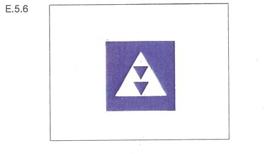 | 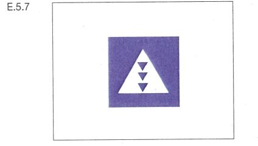 | ||
 |  | ||
| 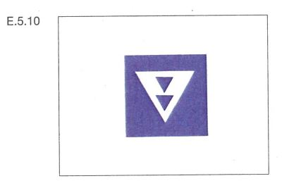 | 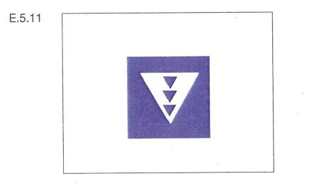 | ||
| 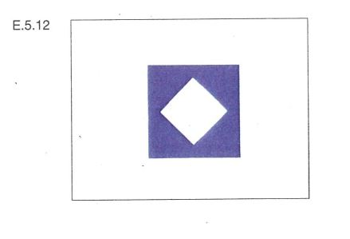 | 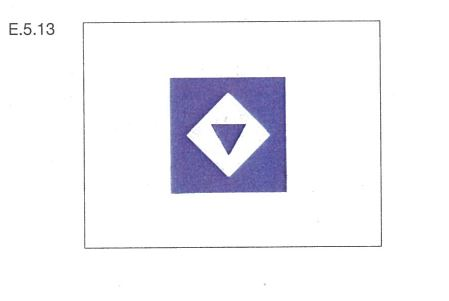 | ||
| 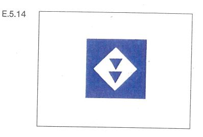 | 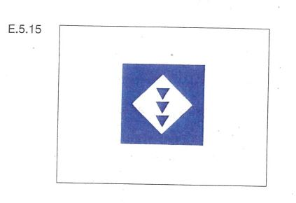 | ||
 | 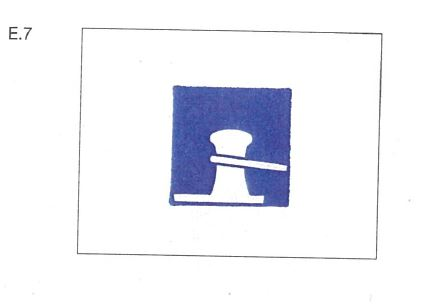 | ||
| 1. | Fahrzeuge und Schwimmkörper sowie schwimmende Anlagen dürfen nicht ankern und keine Ankerpfähle benutzen: | ||
| a) | auf den Abschnitten der Wasserstraße, für die ein allgemeines Ankerverbot besteht; | ||
| b) | auf den durch das Tafelzeichen A.6 (Anlage 7) gekennzeichneten Strecken, auf der Seite der Wasserstraße, auf der das Tafelzeichen steht. | ||
| 2. | Auf den Abschnitten, auf denen das Ankern und die Benutzung von Ankerpfählen nach Nummer 1 Buchstabe a verboten sind, dürfen Fahrzeuge und Schwimmkörper sowie schwimmende Anlagen nur auf den Strecken ankern, die durch das Tafelzeichen E.6 (Anlage 7) gekennzeichnet sind, und nur auf der Seite der Wasserstraße, auf der das Tafelzeichen steht. | ||
| 3. | Auf den Abschnitten, auf denen das Ankern und die Benutzung von Ankerpfählen nach Nummer 1 Buchstabe a verboten sind, dürfen Fahrzeuge und Schwimmkörper sowie schwimmende Anlagen nur auf den Strecken Ankerpfähle benutzen, die durch das Tafelzeichen E.6.1 (Anlage 7) gekennzeichnet sind, und nur auf der Seite der Wasserstraße, auf der das Tafelzeichen steht. | ||
| 1. | Fahrzeuge und Schwimmkörper sowie schwimmende Anlagen dürfen am Ufer nicht festmachen: | ||
| a) | auf den Abschnitten der Wasserstraße, für die ein allgemeines Festmacheverbot besteht; | ||
| b) | auf den durch das Tafelzeichen A.7 (Anlage 7) gekennzeichneten Strecken, auf der Seite der Wasserstraße, auf der das Tafelzeichen steht. |  | |
| 2. | Auf den Abschnitten, auf denen das Festmachen am Ufer nach Nummer 1 Buchstabe a verboten ist, dürfen Fahrzeuge und Schwimmkörper sowie schwimmende Anlagen nur auf den Strecken festmachen, die durch eines der Tafelzeichen E.7 oder E.7.1 (Anlage 7) gekennzeichnet sind, und nur auf der Seite der Wasserstraße, auf der das Tafelzeichen steht. | ||
| 3. | Bäume, Geländer, Pfähle, Grenzsteine, Säulen, Eisenleitern, Handläufe und ähnliche Gegenstände dürfen weder zum Festmachen noch zum Verholen benutzt werden. | ||
| 1. | Auf Liegestellen, bei denen das Tafelzeichen E.5 (Anlage 7) aufgestellt ist, dürfen Fahrzeuge und Schwimmkörper nur auf der Seite der Wasserstraße stilliegen, auf der das Tafelzeichen steht. | ||
| 2. | Auf Liegestellen, bei denen das Tafelzeichen E.5.1 (Anlage 7) aufgestellt ist, dürfen Fahrzeuge und Schwimmkörper nur auf einer Wasserfläche stilliegen, deren Breite auf dem Tafelzeichen in Metern angegeben ist. Die Breite bemißt sich vom Aufstellungsort des Tafelzeichens. | ||
| 3. | Auf Liegestellen, bei denen das Tafelzeichen E.5.2 (Anlage 7) aufgestellt ist, dürfen Fahrzeuge und Schwimmkörper nur auf der Wasserfläche zwischen den zwei Entfernungen stilliegen, die auf dem Tafelzeichen in Metern angegeben sind. Beide Entfernungen bemessen sich vom Aufstellungsort des Tafelzeichens. | ||
| 4. | Auf Liegestellen, bei denen das Tafelzeichen E.5.3 (Anlage 7) aufgestellt ist, dürfen auf der Seite der Wasserstraße, auf der das Tafelzeichen steht, nicht mehr Fahrzeuge und Schwimmkörper nebeneinander stilliegen, als auf dem Tafelzeichen in römischen Zahlen angegeben ist. | ||
| 1. | Auf Liegestellen, bei denen eines der Tafelzeichen E.5.4 bis E.5.15 (Anlage 7) aufgestellt ist, dürfen nur die Fahrzeugarten stilliegen, für die das Tafelzeichen gilt. | ||
 | |||
 |  | ||
 |  | ||
 |  | ||
 | |||
 |  | ||
| 2. | Die Liegestellen sind, soweit nichts anderes bestimmt ist, auf der Seite der Wasserstraße, auf der das Tafelzeichen steht, vom Ufer aus und ein Fahrzeug neben dem anderen zu belegen. | ||
| 3. | An Liegestellen, bei denen das Tafelzeichen B.12 (Anlage 7) aufgestellt ist, sind alle Fahrzeuge verpflichtet, sich an einen betriebsbereiten Landstromanschluss anzuschließen und ihren gesamten Bedarf an elektrischer Energie während des Stillliegens daraus zu decken. Ausnahmen vom Gebot nach Satz 1 können auf einem rechteckigen weißen zusätzlichen Schild angegeben werden, das unterhalb des Tafelzeichens B.12 angebracht ist. | ||
| 4. | Nummer 3 findet keine Anwendung auf Fahrzeuge, die während des Stillliegens ausschließlich eine Energieversorgung nutzen, welche keine Geräusche sowie keine gasförmigen Schadstoffe und luftverunreinigenden Partikel verursacht. | ||
| 1. | Dieser Paragraph gilt für die gesamte Strecke zwischen km 173,55 (Beginn der Umleitung der Stauhaltung Kembs) und km 335,70 (Rückführung der Stauhaltung Iffezheim), einschließlich des Seitenkanals zwischen km 173,55 und km 226,54 (Rückführung der Stauhaltung Vogelgrün) und der Umleitungen des kanalisierten Rheins in Marckolsheim, Rhinau, Gerstheim und Straßburg. | ||
| 2. | Die §§ 6.04 und 6.05 sind auf den vorgenannten Strecken nicht anwendbar. | ||
| 3. | Beim Begegnen müssen alle Fahrzeuge die rechte Seite einhalten, soweit dies für die gefahrlose Vorbeifahrt Backbord an Backbord notwendig ist. | ||
| 4. | Abweichend von den Nummern 2 und 3 können Fahrzeuge im Nahbereich der Schleusen verlangen, daß die Vorbeifahrt nach den §§ 6.04 und 6.05 Steuerbord an Steuerbord stattfindet; sie dürfen dies jedoch nur, nachdem sie sich vergewissert haben, daß ihrem Verlangen ohne Gefahr entsprochen werden kann. | ||
| Dieselben Bestimmungen gelten außerdem für Kanalpenichen (Länge 38,50 m) mit oder ohne Vorspann, wenn sie auf folgenden Stromstrecken zu Berg fahren: | |||
| a) | Stauhaltung Rhinau zwischen km 244,00 und den Schleusen Marckolsheim, | ||
| b) | Stauhaltung Marckolsheim zwischen km 228,00 und den Schleusen Vogelgrün. | ||
| 5. | Auf dem Rhein darf oberhalb und unterhalb der Wehre die gerade Verbindungslinie zwischen zwei auf gegenüberliegenden Ufern aufgestellten allgemeinen Verbotszeichen A.1 (Anlage 7) nicht überschritten werden. | 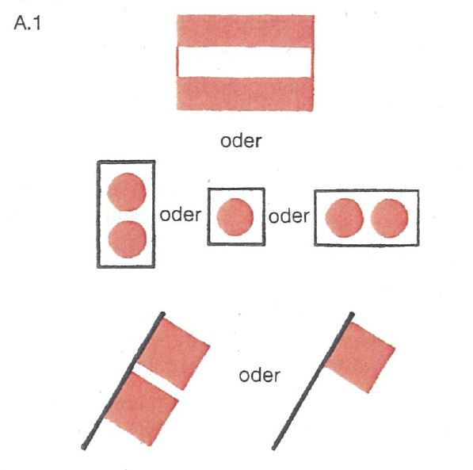 | |
| 6. | In die Werkkanäle der Kraftwerke darf nicht hineingefahren werden. Die Endpunkte dieser Kanäle sind durch allgemeine Zeichen A.1 (Anlage 7) gekennzeichnet. | ||
| 7. | Das Wenden ist nur auf den Wendestellen oberhalb der oberen Schleusenvorhäfen, in den unteren Schleusenvorhäfen und im unteren Schleusenkanal der untersten Schleusen gestattet. Diese Beschränkung gilt nicht für Kleinfahrzeuge. | ||
| 8. | Das Stilliegen und das Anlegen sind außerhalb der Schleusenvorhäfen und des unteren Schleusenkanals der untersten Schleusen verboten. | ||
| 9. | Das Verbot des Wendens, des Stilliegens und des Anlegens nach den Nummern 7 und 8 gilt nicht für Fahrzeuge, | ||
| a) | die an behördlich zugelassenen Stellen laden oder löschen wollen oder | ||
| b) | die aus zwingenden Sicherheitsgründen anhalten mußten. | ||
| 10. | Fahrzeuge über 11,45 m Breite dürfen die kleinen Schleusen Ottmarsheim, Fessenheim, Vogelgrün, Marckolsheim, Rhinau, Gerstheim und Straßburg nicht benutzen. | ||
| 11. | Auf dem Großen Elsässischen Kanal und dem kanalisierten Rhein bis km 294,00 kann die in den §§ 3.08, 3.09, 3.10, 3.13, 3.14, 3.15 und 3.29 angegebene Mindesthöhe der Lichter und Zeichen in dem Maße herabgesetzt werden, als es für die Durchfahrt unter Bauwerken erforderlich ist, wobei alle Maßnahmen zu treffen sind, damit die verschiedenen Lichter und Zeichen sichtbar bleiben. | ||
| km 575,50 und km 578,50 | (Oberspay), |
| km 606,50 und km 608,50 | (Weißenthurm), |
| km 635,00 und km 637,50 | (Unkel), |
| km 720,50 und km 723,00 | (Benrath), |
| km 740,00 und km 744,00 | (Düsseldorf) und |
| km 784,50 und km 786,50 | (Baerl) |
Strecke | Richtpegel für Berg- und Talfahrt Wasserstand | |
| Marke I | Marke II | |
| Basel (km 166,53) | ||
| Basel-Schleusen Kembs Kembs (km 179,10) | Basel-Rheinhalle 7,00 8,20 | |
| Schleusen Iffezheim (km 334,00) | ||
| Schleusen Iffezheim-Germersheim Germersheim (km 384,00) | Maxau 6,20 7,50 | |
| Germersheim-Mannheim-Rheinau Mannheim-Rheinau (km 410,50) | Speyer 6,20 7,30 | |
| Mannheim-Rheinau-Mannheim-Sandhofen Mannheim-Sandhofen (km 431,50) | Mannheim 6,50 7,60 | |
| Mannheim-Sandhofen-Gernsheim Gernsheim (km 462,00) | Worms 4,40 6,50 | |
| Gernsheim-Eltville Eltville (km 511,00) | Mainz 4,75 6,30 | |
| Eltville-Lorch Lorch (km 540,00) | Bingen 3,50 4,90 | |
| Lorch-Bad Salzig Bad Salzig (km 566,00) | Kaub 4,60 6,40 | |
| Bad Salzig-Engers Engers (km 601,00) | Koblenz 4,70 6,50 | |
| Engers-Bad Breisig Bad Breisig (km 624,00) | Andernach 5,50 7,60 | |
| Bad Breisig-Mondorf Mondorf (km 660,00) | Oberwinter 4,90 6,80 | |
| Mondorf-Dormagen Dormagen (km 710,00) | Köln 6,20 8,30 | |
| Dormagen-Krefeld Krefeld (km 763,00) | Düsseldorf 7,10 8,80 | |
| Krefeld-Orsoy Orsoy (km 794,00) | Duisburg-Ruhrort 9,30 11,30 | |
| Orsoy-Rees Rees (km 837,00) | Wesel 8,70 10,60 | |
| Rees-Spyck'sche Fähre Spyck'sche Fähre (km 857,40) | Emmerich 7,00 8,70 | |
| in der Talfahrt durch ein bei km 291,30 | 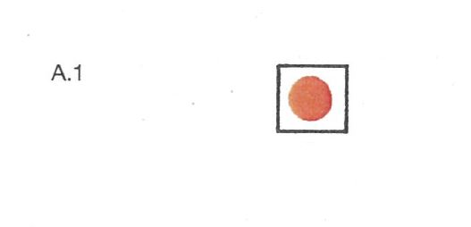 |
| aufgestelltes rotes Licht (Zeichen A.1, Anlage 7); |
| in der Bergfahrt durch ein bei km 294,50 | |
| aufgestelltes rotes Licht (Zeichen A.1, Anlage 7). |
| Strecke | Länge in m | Breite in m | |||
| 3.1 | Basel (km 166,53) bis Schleusen Iffezheim (km 334,00) | ||||
| a) | Schleusen Kembs | ||||
| aa) | Westschleuse | 180 | 22,90 | ||
| bb) | Ostschleuse | 186,50 | 22,90 | ||
| b) | Schleusen Ottmarsheim | ||||
| aa) | große Schleuse | 183 | 22,80 | ||
| bb) | kleine Schleuse | 183 | 11,45 | ||
| c) | Schleusen Fessenheim, Vogelgrün, Marckolsheim und Rhinau | ||||
| aa) | große Schleuse | 183 | 22,80 | ||
| bb) | kleine Schleuse | 183 | 11,45 | ||
| Diese Länge darf mit Erlaubnis der zuständigen Behörde auf 185 m erhöht werden. In diesem Fall ist § 6.28 Nummer 7 Buchstabe a und e nicht anzuwenden. | |||||
| d) | Schleusen Gerstheim und Straßburg | ||||
| aa) | große Schleuse | 185 | 22,90 | ||
| bb) | kleine Schleuse | 185 | 11,45 | ||
| e) | Schleusen Gambsheim und Iffezheim | 270 | 22,90 | ||
| Die zuständige Behörde kann eine größere Länge zulassen. | |||||
| 3.2 | a) | Schleusen Iffezheim (km 334,00) bis Lorch (km 540,20) | 193 | 22,90 | |
| b) | Karlsruhe (km 359,80) bis Lorch (km 540,20) zusätzlich | 153 | 34,35 | ||
| nur Talfahrt und bei einem Wasserstand am Pegel Kaub von 1,20 m und mehr, wenn nicht die zuständige Behörde die Fahrt bei einem niedrigeren Wasserstand ausdrücklich zugelassen hat. Sofern am schiebenden Fahrzeug Schubleichter längsseits gekuppelt mitgeführt werden, müssen diese unbeladen sein. | |||||
| 3.3 | Lorch (km 540,20) bis St. Goar (km 556,00) | ||||
| a) | Bergfahrt | 186,50 | 22,90 | ||
| b) | Talfahrt | 116,50 | 22,90 | ||
| Die zuständige Behörde kann eine größere Länge zulassen. | |||||
| c) | bei einem Wasserstand am Pegel Kaub zwischen 0,85 m und der Hochwassermarke I zusätzlich für Schubverbände | ||||
| aa) | Bergfahrt | 193 | 22,90 | ||
| bb) | Talfahrt | 193 | 12,50 | ||
| d) | Buchstabe c gilt nur, wenn der Schubverband | ||||
| aa) | bei einer Breite bis zu 12,50 m | ||||
| aaa) Mehrschraubenantrieb und eine oder mehrere vom Steuerstand bedienbare Bugsteueranlagen von insgesamt mindestens 360 kW Leistung oder | |||||
| bbb) Einschraubenantrieb und eine oder mehrere vom Steuerstand bedienbare Bugsteueranlagen von insgesamt mindestens 500 kW Leistung, | |||||
| davon mindestens die Hälfte der Leistung jeweils an der Spitze des Verbandes oder an den vorderen Leichtern, hat; | |||||
| bb) | bei einer Breite von mehr als 12,50 m | ||||
| Mehrschraubenantrieb mit zwei voneinander unabhängigen Antrieben und eine oder mehrere vom Steuerstand bedienbare Bugsteueranlagen von insgesamt mindestens 500 kW Leistung, davon mindestens die Hälfte der Leistung an der Spitze des Verbandes oder an den vorderen Leichtern, hat; | |||||
| cc) | bei einer Länge von mehr als 186,50 m in der Talfahrt | ||||
| mit einem Mehrschraubenantrieb ausgerüstet ist und bei einem Wasserstand am Pegel Kaub von mehr als 3,50 m über eine spezifische Leistung von mindestens 0,5 kW pro Ladungstonne verfügt. | |||||
| 3.4 | a) | St. Goar (km 556,00) bis Gorinchem (km 952,50) | 193 | 22,90 | |
| b) | Talfahrt zusätzlich | 153 | 34,35 | ||
| c) | Buchstabe b gilt auf der Strecke | ||||
| aa) | St. Goar (km 556,00) bis Rolandswerth (km 641,80) nur bei einem Wasserstand am Pegel Kaub von 1,20 m und mehr, | ||||
| bb) | Rolandswerth (km 641,80) bis Spyck’sche Fähre (km 857,40) nur bei einem Wasserstand am Pegel Ruhrort von 2,10 m und mehr, | ||||
| cc) | Spyck’sche Fähre (km 857,40) bis Gorinchem (km 952,50) nur bei einem Wasserstand am Pegel Lobith von 8,50 m und mehr, | ||||
| wenn nicht die zuständige Behörde die Fahrt bei einem niedrigeren Wasserstand ausdrücklich zugelassen hat. | |||||
| Sofern am schiebenden Fahrzeug Schubleichter längsseits gekuppelt mitgeführt werden, müssen diese unbeladen sein. | |||||
| 3.5 | Bad Salzig (km 564,30) bis Gorinchem (km 952,50) unbeschadet der Bestimmungen in Nummer 3.4 für Schubverbände | ||||
| a) | Bergfahrt (lange Formation) | 269,50 | 22,90 | ||
| b) | Talfahrt (breite Formation) | 193 | 34,35 | ||
| c) | In den Fällen der Buchstaben a und b darf ein Schubverband | ||||
| aa) | nicht mehr als sechs Schubleichter im Verband umfassen. In der Talfahrt dürfen höchstens vier Schubleichter einen Tiefgang von 1,50 m oder mehr haben. Trägerschiffsleichter dürfen nur längsseits von anderen Leichtern mitgeführt werden; dabei gelten vier Trägerschiffsleichter hintereinander als ein Schubleichter; | ||||
| bb) | die Fahrt nur antreten, wenn an der Spitze des Verbandes eine vom Steuerstand des schiebenden Fahrzeuges aus zu bedienende Bugsteueranlage vorhanden ist. | ||||
| d) | Auf dem Streckenabschnitt Bad Salzig (km 564,30) bis Spyck’sche Fähre (km 857,40) darf darüber hinaus ein Schubverband die Fahrt nur bei einem Wasserstand am Pegel Ruhrort zwischen 2,75 m und 7,15 m antreten, wenn nicht die zuständige Behörde die Fahrt bei anderen Wasserständen ausdrücklich zugelassen hat. | ||||
| e) | Auf dem Streckenabschnitt Spyck’sche Fähre (km 857,40) bis Gorinchem (km 952,50) darf, wenn nicht die zuständige Behörde die Fahrt unter anderen Bedingungen ausdrücklich zugelassen hat, darüber hinaus ein Schubverband die Fahrt nur antreten | ||||
| aa) | bei einem Wasserstand am Pegel Lobith zwischen 8,50 m und 13,50 m; | ||||
| bb) | wenn er keine gefährlichen Güter mitführt, für deren Beförderung ein Zulassungszeugnis nach ADN erforderlich ist; | ||||
| cc) | und, bei einem Schubboot bis 40 m Länge, wenn darüber hinaus folgende Bedingungen erfüllt sind: | ||||
| aaa) die größtmögliche Antriebsleistung des Schubbootes darf 4 500 kW nicht überschreiten; | |||||
| bbb) in der langen Formation müssen mindestens vier Schubleichter einen Tiefgang von 2,50 m oder mehr haben. Die Talfahrt in der breiten Formation darf auf dieser Strecke auch ohne Bugsteueranlage durchgeführt werden, wenn mindestens zwei und höchstens vier Schubleichter einen Tiefgang von 2,50 m oder mehr haben und zwei davon in der Achse des Verbandes liegen. | |||||
| 3.6 | a) | Pannerden (km 867,46) bis Lekkanal (km 949,40) | 135 | 15 | |
| b) | für Schubverbände mit einer größeren Länge als 110 m und einer Bugsteueranlage von ausreichender Leistung. Ein Überholungs- und Begegnungsverbot gilt zwischen IJsselkop (km 878,60) und Arnheim (km 885,00). | 186,50 | 11,45 | ||
| Die zuständige Behörde kann eine größere Länge zulassen. Dabei betragen die Höchstabmessungen der Schubverbände, die auf dem Amsterdam-Rhein-Kanal fahren und den Lek bei Wijk bij Duurstede kreuzen, in der Länge 200 m und in der Breite 23,50 m. | |||||
| 3.7 | Lekkanal (km 949,40) bis Krimpen (km 989,20) | ||||
| a) | kurze Formation | 116,50 | 22,90 | ||
| b) | lange Formation | 193 | 11,45 | ||
| Die zuständige Behörde kann größere Abmessungen zulassen. | |||||
| Signalstelle A: | km 550,57, linkes Ufer, am Ochsenturm bei Oberwesel; |
| Signalstelle B: | km 552,80, linkes Ufer, am Kammereck; |
| Signalstelle C: | km 553,61, linkes Ufer, am Betteck; |
| Signalstelle D: | km 554,34, linkes Ufer, gegenüber der Loreley („Die Lützelsteine“); |
| Signalstelle E: | km 555,43, linkes Ufer, an der Bank. |
| Feld | Nummer der Teilstrecke | Oberstromgrenze der Teilstrecke | Unterstromgrenze der Teilstrecke |
| Signalstelle A: am Ochsenturm | |||
| oben | 1 | km 548,50 | km 549,50 |
| unten | 2 | km 549,50 | km 550,57 |
| Signalstelle C: am Betteck | |||
| oben | 3 | km 550,57 | km 551,30 |
| Mitte | 4 | km 551,30 | km 552,40 |
| unten | 5 | km 552,40 | km 553,60 |
| Signalstelle D: gegenüber der Loreley („Die Lützelsteine“) | |||
| oben | 4 | km 551,30 | km 552,40 |
| Mitte | 5 | km 552,40 | km 553,61 |
| unten | 6 | km 553,61 | km 554,34 |
| Signalstelle E: an der Bank | |||
| oben | 6 | km 553,61 | km 554,34 |
| unten | 7 | km 554,34 | km 555,43 |
| In der Teilstrecke fährt mindestens ein Verband mit einer Länge über 110 m zu Tal. |  |
| In der Teilstrecke fährt mindestens ein Verband mit einer Länge bis 110 m oder ein Fahrzeug mit einer Länge über 110 m oder mit einer Breite über 15 m zu Tal. |  |
| In der Teilstrecke fährt mindestens ein Fahrzeug mit einer Länge bis 110 m zu Tal. |  |
| In der Teilstrecke befindet sich kein Talfahrer. |  |
| 1. | Die Grenzen der Reeden werden am Ufer durch das Tafelzeichen C.4 (Anlage 7) mit einer quadratischen weißen Zusatztafel mit dem Buchstaben "R" bezeichnet; gegebenenfalls kann das Zeichen durch eine dreieckige weiße Zusatztafel ergänzt sein, auf der in schwarzen Zahlen die Länge der Reede angegeben ist. | ||
| 2. | Auf den Reeden dürfen Fahrzeuge nur stilliegen | ||
| a) | auf den nach § 7.06 gekennzeichneten Liegestellen; | ||
| b) | zum Zweck des Ladens oder Löschens an den hierfür bestimmten Stellen, zu denen die Zufahrten je nach Bedarf freigehalten werden müssen. | ||
| 3. | Fahrzeuge, für die keine besonders gekennzeichneten Liegestellen vorgesehen sind, dürfen auf den Reeden nur dann stilliegen, wenn ihnen von der zuständigen Behörde ein Liegeplatz zugewiesen wird. | ||
| 4. | Auf den Reeden dürfen bis zu drei Fahrzeuge nebeneinander liegen, sofern nicht durch die Bestimmungen für die einzelnen Reeden diese Anzahl eingeschränkt oder nach § 7.05 Nr. 2, 3 oder 4 eine andere Regelung getroffen wird. | ||
| Liegestellen von | km 527,55 bis km 527,97 und |
| km 528,20 bis km 528,50. |
| (nur Hinweis) | ||
| A | : | Österreich |
| B | : | Belgien |
| BG | : | Bulgarien |
| BIH | : | Bosnien und Herzegowina |
| BY | : | Weißrussland |
| CH | : | Schweiz |
| CZ | : | Tschechische Republik |
| D | : | Deutschland |
| F | : | Frankreich |
| FI | : | Finnland |
| HR | : | Kroatien |
| HU | : | Ungarn |
| I | : | Italien |
| L | : | Luxemburg |
| LT | : | Litauen |
| MD | : | Republik Moldavien |
| MLT | : | Malta |
| N | : | Niederlande |
| NO | : | Norwegen |
| P | : | Portugal |
| PL | : | Polen |
| R | : | Rumänien |
| RUS | : | Russische Föderation |
| SE | : | Schweden |
| SI | : | Slovenien |
| SRB | : | Serbien |
| SK | : | Slowakei |
| UA | : | Ukraine |
 | 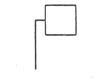 |  | 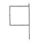 |
| Licht von allen Seiten sichtbar | Licht nur über einen beschränkten Horizontbogen sichtbar | Funkellicht | Flagge oder Tafel |
 |  | 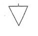 | 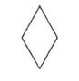 |
| Ball | Zylinder | Kegel | Doppelkegel |
| Nachtbezeichnung | Bild | Tagbezeichnung |
| 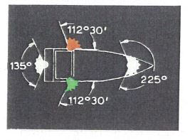 | 1 | |
| ||
| 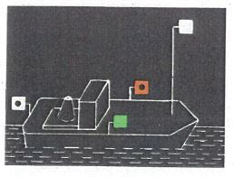 | 2 | |
| ||
 | 3 | |
| ||
 | 4 |  |
| ||
| 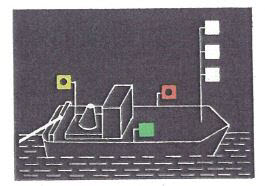 | 5 |  |
| ||
 | 6 |  |
| ||
| 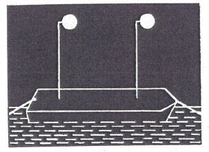 | 7 | 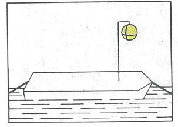 |
| ||
| 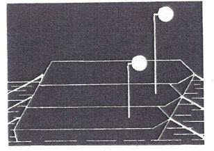 Geändertes Bild 8: Das Licht auf dem mittleren Anhang befindet sich auf dem äußeren Anhang | 8 |  |
| ||
 | 9 | 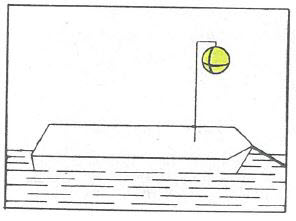 |
| ||
 | 10 | 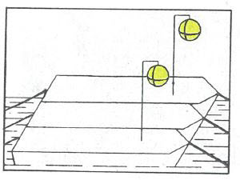 |
| ||
| 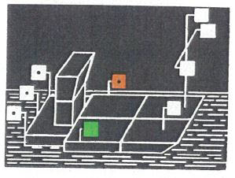 | 11 | |
| ||
 | 12 | |
| ||
| 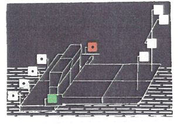 | 13 | |
| ||
| 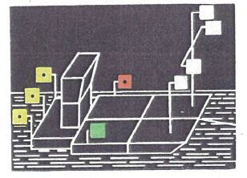 | 14 | 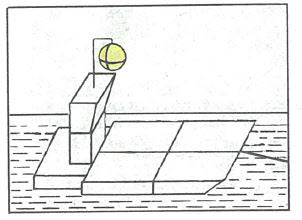 |
| ||
| 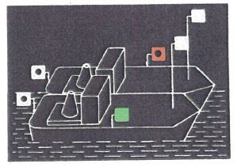 | 15 | |
| ||
 | 16 | |
| ||
 | 17 | |
| ||
 | 18 | |
| ||
| 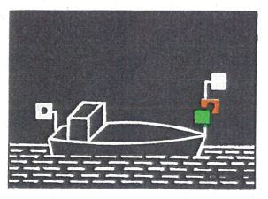 | 19 | |
| ||
| 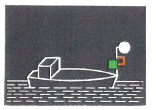 | 20 | |
| ||
| 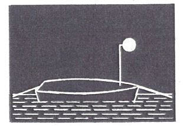 | 21 | |
| ||
| 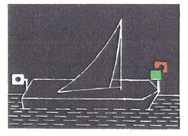 | 22 | |
| ||
| 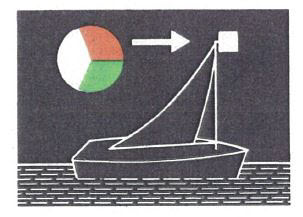 | 23 | |
| ||
 | 24 | |
| ||
 | 25 | |
| ||
| 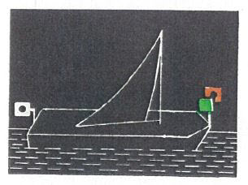 | 26 |  |
| ||
 | 27a | 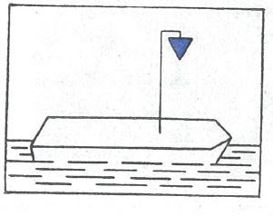 |
| 27b | 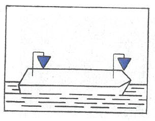 | |
| ||
| 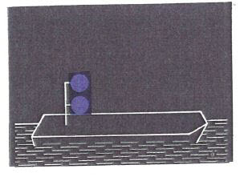 | 28a |  |
| 28b |  | |
| ||
 | 29 |  |
| ||
 | 30 |  |
| ||
| 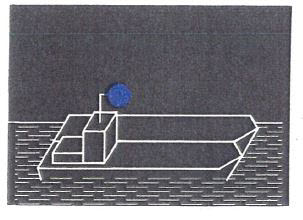 | 31 |  |
| ||
| 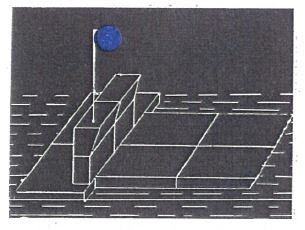 | 32 | 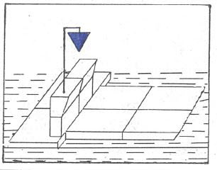 |
| ||
| 33 | 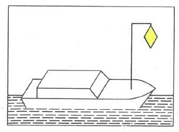 | |
| ||
 | 34 | |
| ||
| 35 | ||
| ||
 | 36 | |
| ||
| 37 |  | |
| ||
 | 38 |  |
| ||
 | 39 | |
| ||
 | 40 | |
| ||
 | 41 | |
| ||
| 42 | ||
| ||
| 43 | ||
| ||
| 44 | ||
| ||
| 45 | ||
| ||
 | 46 | |
| ||
| 47 | ||
| ||
| 48 |  | |
| ||
| 49a |  | |
| 49b |  | |
| ||
 | 50a |  |
| 50b | ||
| ||
| 51 | ||
| ||
 | 52 | |
| ||
| 53 |  | |
| ||
 | 54 | |
| ||
 | 55 | |
| ||
 | 56 | |
| ||
 | 57 |  |
| ||
| 58 | ||
| ||
 | 59 | |
| ||
 | 60 | |
| ||
 | 61 |  |
| ||
 | 62 |  |
| ||
| 63 | ||
| ||
| 64 | ||
| ||
| 65 |  | |
| ||
| 66 |  | |
| ||
| A. Allgemeine Zeichen | |||
| 1 langer Ton | „Achtung“ | ||
| 1 kurzer Ton | „Ich richte meinen Kurs nach Steuerbord“ | ||
 | 2 kurze Töne | „Ich richte meinen Kurs nach Backbord“ | |
| 3 kurze Töne | „Meine Maschine geht rückwärts“ | ||
| 4 kurze Töne | „Ich bin manövrierunfähig“ | ||
| Folge sehr kurzer Töne | „Gefahr eines Zusammenstoßes“ | ||
| Wiederholte lange Töne | |||
| oder | „Notsignal“ | § 4.04 Nr. 1 | |
 | Gruppen von Glockenschlägen |
| B. Begegnungszeichen | |||
| Vorbeifahrt an Backbord verlangt | |||
| Normalfall: | |||
 | 1 kurzer Ton des Bergfahrers | „Ich will an Backbord vorbeifahren“ | § 6.04 Nr. 4 |
 | 1 kurzer Ton des Talfahrers | „Einverstanden, fahren Sie an Backbord vorbei“ | § 6.04 Nr. 5 |
| Abweichung: | |||
| 2 kurze Töne des Talfahrers | „Nicht einverstanden, fahren Sie an Steuerbord vorbei“ | § 6.05 Nr. 2 | |
| 2 kurze Töne des Bergfahrers | „Einverstanden, ich werde an Steuerbord vorbeifahren“ | § 6.05 Nr. 3 | |
| Vorbeifahrt an Steuerbord verlangt | |||
| Normalfall: | |||
 | 2 kurze Töne des Bergfahrers | „Ich will an Steuerbord vorbeifahren” | § 6.04 Nr. 4 |
| 2 kurze Töne des Talfahrers | „Einverstanden, fahren Sie an Steuerbord vorbei“ | § 6.04 Nr. 5 | |
| Abweichung: | |||
 | 1 kurzer Ton des Talfahrers | „Nicht einverstanden, fahren Sie an Backbord vorbei“ | § 6.05 Nr. 2 |
| 1 kurzer Ton des Bergfahrers | „Einverstanden, ich werde an Backbord vorbeifahren“ | § 6.05 Nr. 3 | |
| C. Überholzeichen | |||
| Überholen an Backbord des Vorausfahrenden verlangt | |||
 | 2 lange Töne 2 kurze Töne des Überholenden | „Ich will auf Ihrer Backbordseite überholen“ | § 6.10 Nr. 2 |
| Normalfall: | Kein Zeichen des Vorausfahrenden | „Einverstanden, Sie können auf meiner Backbordseite überholen“ | § 6.10 Nr. 3 |
| Abweichung: | |||
 | 2 kurze Töne des Vorausfahrenden | „Nicht einverstanden, überholen Sie auf meiner Steuerbordseite“ | § 6.10 Nr. 4 |
| 1 kurzer Ton des Überholenden | „Einverstanden, ich werde auf Ihrer Steuerbordseite überholen“ | § 6.10 Nr. 4 | |
| Überholen an Steuerbord des Vorausfahrenden verlangt | |||
 | 2 lange Töne, 1 kurzer Ton des Überholenden | „Ich will auf Ihrer Steuerbordseite überholen“ | § 6.10 Nr. 2 |
| Normalfall: | Kein Schallzeichen des Vorausfahrenden | „Einverstanden, Sie können auf meiner Steuerbordseite überholen” | § 6.10 Nr. 3 |
| Abweichung: | |||
| 1 kurzer Ton des Vorausfahrenden | „Nicht einverstanden, überholen Sie auf meiner Backbordseite“ | § 6.10 Nr. 4 | |
 | 2 kurze Töne des Überholenden | „Einverstanden, ich werde auf Ihrer Backbordseite überholen“ | § 6. 10 Nr. 4 |
| Unmöglichkeit des Überholens | |||
| 5 kurze Töne des Vorausfahrenden | „Man kann mich nicht überholen“ | § 6.10 Nr. 5 | |
| D. Wendezeichen | |||
 | 1 langer Ton, 1 kurzer Ton | „Ich wende über Steuerbord“ | § 6.13 Nr. 2, § 6.16 Nr. 2 |
 | 1 langer Ton, 2 kurze Töne | „Ich wende über Backbord“ | § 6.13 Nr. 2, § 6.16 Nr. 2 |
| E. Zeichen bei der Einfahrt in und der Ausfahrt aus Häfen und Nebenwasserstraßen | |||
 | 3 lange Töne, 1 kurzer Ton | „Ich will meinen Kurs nach Steuerbord richten“ | § 6.16 Nr. 2 |
 | 3 lange Töne, 2 kurze Töne | „Ich will meinen Kurs nach Backbord richten“ | § 6.16 Nr. 2 |
| 3 lange Töne | „Ich will überqueren“ | § 6.16 Nr. 2 | |
| F. (ohne Inhalt) |
| G. Zeichen bei unsichtigem Wetter | |||
| |||
| 1 langer Ton, längstens jede Minute wiederholt | § 6.33 Buchstabe b | ||
| |||
| 1 langer Ton, wiederholt | § 6.32 Nr. 2 Buchstabe d | ||
| |||
| 1 Gruppe von Glockenschlägen, längstens jede Minute wiederholt | § 6.31 Nr. 2 | ||
| A.1 | Verbot der Durchfahrt (allgemeines Zeichen); (§ 3.25 Nr. 1 Buchstabe b, § 6.08 Nr. 2, § 6.16 Nr. 4, § 6.22 Nr. 1, § 6.22a, § 6.25 Nr. 1, § 6.27 Nr. 1, § 6.28a Nr. 3, § 9.02 Nr. 5 und 6 und § 10.01 Nr. 4 Buchstabe c) | |
| entweder Tafeln |  | |
| oder rote Lichter |  | |
| oder rote Flaggen. | ||
| Werden zwei Lichter oder zwei Flaggen übereinander gezeigt, bedeutet dies ein langdauerndes Verbot. | ||
| A.1a | Gesperrte Wasserflächen; jedoch für Kleinfahrzeuge ohne Antriebsmaschine befahrbar. (§ 6.22 Nr. 2 Buchstabe a) |  |
| A.2 | Überholverbot, allgemein. (§ 6.11) |  |
| A.3 | Überholverbot für Verbände untereinander. Dies gilt nicht, wenn einer der Verbände ein Schubverband ist, dessen Länge 110,00 m und dessen Breite 12,00 m nicht über schreitet. (§ 6.11) |  |
| A.4 | Verbot des Begegnens und Überholverbot. (§ 6.08 Nr. 1) |  |
| A.5 | Stilliegeverbot auf der Seite der Wasserstraße, auf der das Tafelzeichen steht. (§ 7.02 Nr. 1 Buchstabe c) |  |
| A.5.1 | Stilliegeverbot auf der Wasserfläche, deren Breite, gemessen vom Aufstellungsort, auf dem Tafelzeichen in Metern angegeben ist. (§ 7.02 Nr. 1 Buchstabe 1) |  |
| A.6 | Ankerverbot und Verbot des Schleifenlassens von Ankern, Trossen oder Ketten auf der Seite der Wasserstraße, auf der das Tafelzeichen steht. (§ 6.18 Nr. 2 und § 7.03 Nr. 1 Buchstabe b) | |
| A.7 | Festmacheverbot am Ufer auf der Seite der Wasserstraße, auf der das Tafelzeichen steht. (§ 7.04 Nr. 1 Buchstabe b) |  |
| A.8 | Wendeverbot. (§ 6.13 Nr. 4) | |
| A.9 | Vermeidung von Wellenschlag (§ 6.20 Nummer 1 Buchstabe e und § 15.07 Nummer 8 Buchstabe b) | |
| A.10 | Verbot, außerhalb der angezeigten Begrenzung zu fahren. (§ 6.24 Nr. 2 Buchstabe a) |  |
| A.11 | Verbot der Einfahrt; die Vorbereitungen zur Fortsetzung der Fahrt sind jedoch zu treffen (§ 6.28a Nr. 1 Buchstabe c) | |
| A.12 | Fahrverbot für Fahrzeuge mit Maschinenantrieb. (§ 6.22 Nr. 2 Buchstabe b) | |
| A.13 | (ohne Inhalt) | |
| A.14 | Verbot des Wasserskilaufens. |  |
| A.15 | Fahrverbot für Segelfahrzeuge. | |
| A.16 | Fahrverbot für Fahrzeuge, die weder mit Maschinenantrieb noch unter Segel fahren. |  |
| A.17 | Verbot des Segelsurfens. |  |
| A.18 | Fahrverbot für Wassermotorräder (Waterscooter, Jetski usw.). |  |
| B.1 | Gebot, die durch den Pfeil angezeigte Richtung einzuschlagen. (§ 6.12) | |
| B.2 |
| |
| ||
| B.3 |
|  |
|  | |
| B.4 |
| |
| ||
| B.5 | Gebot, unter bestimmten Voraussetzungen anzuhalten. (§ 6.28 Nr. 1) | |
| B.6 | Gebot, die angegebene Geschwindigkeit (in km/Std.) nicht zu überschreiten. | |
| B.7 | Gebot, Schallsignal zu geben. |  |
| B.8 | Gebot, besondere Vorsicht walten zu lassen. (§ 6.08 Nr. 2) | |
| B.9 |
| |
|  | |
| B.10 | (ohne Inhalt) | |
| B.11 |
| |
| ||
| B.12 | Gebot zur Nutzung von Landstromanschlüssen (§ 7.06 Nr. 3) |  |
| C.1 | Die Fahrwassertiefe ist begrenzt. |  |
| C.2 | Die lichte Höhe über dem Wasserspiegel ist begrenzt. |  |
| C.3 | Die Breite der Durchfahrtsöffnung oder der Fahrrinne ist begrenzt. | |
| C.4 | Es bestehen Schiffahrtsbeschränkungen; sie sind auf einer zusätzlichen Tafel unter dem Schiffahrtszeichen angegeben. |  |
| C.5 | Die Fahrrinne ist am rechten (linken) Ufer eingeengt; die Zahl auf dem Zeichen gibt den Abstand in Metern an, in dem sich die Fahrzeuge vom Tafelzeichen entfernt halten sollen. |
| D.1 | Empfohlene Durchfahrtsöffnung | |
|  | |
| ||
| D.2 | Empfehlung, sich in dem durch die Tafeln begrenzten Raum zu halten. (§ 6.24 Nr. 2 Buchstabe b) |  |
| D.3 | Empfehlung, in der Richtung des Pfeils zu fahren; |  |
| in der Richtung vom festen Licht zum Gleichtaktlicht zu fahren. |  |
| E.1 | Erlaubnis zur Durchfahrtsöffnung (allgemeines Zeichen). (§ 3.25 Nr. 1 Buchstabe a, § 6.08 Nr. 2, § 6.27 Nr. 2 und § 6.28a) |  |
| E.2 | Kreuzung einer Hochspannungsleitung. |  |
| E.3 | Wehr | |
| E.4a | Nicht frei fahrende Fähre. | |
| E.4b | Frei fahrende Fähre |  |
| E.5 | Erlaubnis zum Stilliegen auf der Seite der Wasserstraße, auf der das Zeichen steht. (§ 7.05 Nr. 1) |  |
| E.5.1 | Erlaubnis zum Stilliegen auf der Wasserfläche, deren Breite, gemessen vom Aufstellungsort, auf dem Tafelzeichen in Metern angegeben ist. (§ 7.05 Nr. 2) |  |
| E.5.2 | Erlaubnis zum Stilliegen auf der Wasserfläche zwischen den zwei Entfernungen, die, gemessen vom Aufstellungsort, auf dem Tafelzeichen in Metern angegeben sind. (§ 7.05 Nr. 3) | |
| E.5.3 | Höchstzahl der Fahrzeuge, die auf der Seite der Wasserstraße, auf der das Tafelzeichen steht, nebeneinander stilliegen dürfen. (§ 7.05 Nr. 4) |  |
| E.5.4 | Liegestelle für Fahrzeuge der Schubschiffahrt, die nicht die Zeichen nach § 3.14 führen müssen. (§ 7.06 Nr.1) | |
| E.5.5 | Liegestelle für Fahrzeuge der Schubschiffahrt, die die Zeichen nach § 3.14 Nr. 1 führen müssen. (§ 7.06 Nr. 1) |  |
| E.5.6 | Liegestelle für Fahrzeuge der Schubschiffahrt, die die Zeichen nach § 3.14 Nr. 2 führen müssen. (§ 7.06 Nr. 1) |  |
| E.5.7 | Liegestelle für Fahrzeuge der Schubschiffahrt, die die Zeichen nach § 3.14 Nr. 3 führen müssen. (§ 7.06 Nr.1) |  |
| E.5.8 | Liegestelle für andere Fahrzeuge als Fahrzeuge der Schubschiffahrt, die nicht die Zeichen nach § 3.14 führen müssen. (§ 7.06 Nr.1) |  |
| E.5.9 | Liegestelle für andere Fahrzeuge als Fahrzeuge der Schubschiffahrt, die die Zeichen nach § 3.14 Nr. 1 führen müssen. (§ 7.06 Nr. 1) |  |
| E.5.10 | Liegestelle für andere Fahrzeuge als Fahrzeuge der Schubschiffahrt, die die Zeichen nach § 3.14 Nr. 2 führen müssen. (§ 7.06 Nr. 1) |  |
| E.5.11 | Liegestelle für andere Fahrzeuge als Fahrzeuge der Schubschiffahrt, die die Zeichen nach § 3.14 Nr. 3 führen müssen. (§ 7.06 Nr.1) |  |
| E.5.12 | Liegestelle für alle Fahrzeuge, die kein Zeichen nach § 3.14 führen müssen. (§ 7.06 Nr. 1) | |
| E.5.13 | Liegestelle für alle Fahrzeuge, die die Zeichen nach § 3.14 Nr. 1 führen müssen. (§ 7.06 Nr.1) | |
| E.5.14 | Liegestelle für alle Fahrzeuge, die die Zeichen nach § 3.14 Nr. 2 führen müssen. (§ 7.06 Nr. 1) |  |
| E.5.15 | Liegestelle für alle Fahrzeuge, die die Zeichen nach § 3.14 Nr. 3 führen müssen. (§ 7.06 Nr. 1) |  |
| E.6 | Erlaubnis zum Ankern auf der Seite der Wasserstraße, auf der das Tafelzeichen steht. (§ 7.03 Nr. 2) | |
| E.6.1 | Erlaubnis zur Benutzung von Ankerpfählen auf der Seite der Wasserstraße, auf der das Tafelzeichen steht. (§ 7.03 Nr. 3) | |
| E.7 | Erlaubnis zum Festmachen am Ufer auf der Seite der Wasserstraße, auf der das Tafelzeichen steht. (§ 7.04 Nr. 2) |  |
| E.7.1 | Erlaubnis zum Festmachen am Ufer für das sofortige Ein- oder Ausladen eines Kraftwagens (§ 7.04 Nr. 2) |  |
| E.8 | Hinweis auf eine Wendestelle. (§§ 6.13 und 7.02 Nr. 1 Buchstabe i) |  |
| E.9 |
|  |
| ||
|  | |
| E.10 |
| |
| ||
| E.11 | Ende des Verbots oder eines Gebots, das nur in einer Verkehrsrichtung gilt, oder Ende einer Einschränkung. |  |
| E.12 | (ohne Inhalt) | |
| E.13 | Trinkwasserzapfstelle. |  |
| E.14 | Fernsprechstelle. |  |
| E.15 | (ohne Inhalt) | |
| E.16 | (ohne Inhalt) | |
| E.17 | Wasserskistrecke. | |
| E.18 | Fahrerlaubnis für Segelfahrzeuge. | |
| E.19 | Fahrerlaubnis für Fahrzeuge, die weder mit Maschinenantrieb noch unter Segel fahren. |  |
| E.20 | Erlaubnis zum Segelsurfen. | |
| E.21 | Nautischer Informationsfunkdienst. Beispiel: Kanal 18 | |
 | ||
| E.22 | Fahrerlaubnis für Wassermotorräder (Waterscooter, Jetski usw.). |  |
| E.23 | Hochwassermarken. | |
| Marke I Bezugswasserstand |  | |
| Marke II Bezugswasserstand | ||
| Die Marken sind in heller Farbe auf dunklem Untergrund oder in dunkler Farbe auf hellem Untergrund angebracht. | ||
| E.24 | Ohne Inhalt | |
| E.25 | Landstromanschluss vorhanden | |
 |
| (§ 6.16 Nr. 4) |  |
 |  |
 |  |
Anschluss für 400 V~ vorhanden |
| Fahrrinne: | Teil der Wasserstraße, in dem für die durchgehende Schifffahrt bestimmte Breiten und Tiefen vorhanden sind, deren Erhaltung angestrebt wird. |
| Fahrwasser: | Teil der Wasserstraße, der den örtlichen Umständen nach von der durchgehenden Schifffahrt benutzt wird. |
| Rechte Seite/linke Seite: | Die Bezeichnung „rechte Seite“ und „linke Seite“ der Wasserstraße/der Fahrrinne bezieht sich auf die Richtung „Talfahrt“. |
| Feuer: | Licht mit Kennung, das der Befeuerung dient. |
| Festfeuer: | Ununterbrochene Lichterscheinung von gleichbleibender Stärke und Farbe. |
| Taktfeuer: | Unterbrochene Lichterscheinung von gleichbleibender Stärke und Farbe. |
| Es werden verwendet | |
|
| Farbe: rot | Bild 1 |
| Form: Stumpftonne (auch Leuchttonne), Schwimmstange | |
| Toppzeichen (wenn vorhanden): roter Zylinder | |
| Feuer (wenn vorhanden): rotes Taktfeuer (in der Regel mit Radarreflektor) | |
 | |
| Farbe: grün | Bild 2 |
| Form: Spitztonne (auch Leuchttonne), Schwimmstange | |
| Toppzeichen (wenn vorhanden): grüner Kegel – Spitze oben – | |
| Feuer (wenn vorhanden): grünes Taktfeuer (in der Regel mit Radarreflektor) | |
| Farbe: rot-grün waagerecht gestreift | Bild 3 |
| Form: Kugeltonne (auch Leuchttonne), Schwimmstange | |
| Toppzeichen (wenn vorhanden): rot-grün waagerecht gestreifter Ball | |
| Feuer (wenn vorhanden): weißes Funkel- oder Gleichtaktfeuer (in der Regel mit Radarreflektor) | |
| Bild 4 |
| Farbe: rot |  | |
| Form: Stange mit Toppzeichen | ||
| Toppzeichen: roter Kegel – Spitze unten – | ||
| Feuer (wenn vorhanden): rotes Taktfeuer | Bild 5 | |
| Farbe: grün |  | |
| Form: Stange mit Toppzeichen | ||
| Toppzeichen: grüner Kegel – Spitze oben – | ||
| Feuer (wenn vorhanden): grünes Taktfeuer | Bild 6 | |
| Farbe: rot-grün | ||
| Form: Stange mit Toppzeichen | ||
| Toppzeichen: roter Kegel – Spitze unten – über grünem Kegel – Spitze oben – |  | |
| Bild 7 | ||
| Farbe: rot-weiß waagerecht gestreift | Bild 8 | |
| Form: Spierentonne (auch Leuchttonne), Schwimmstange | ||
| Toppzeichen: roter Zylinder | ||
| Feuer (wenn vorhanden): rotes Taktfeuer (in der Regel mit Radarreflektor) | ||
| Farbe: grün-weiß gestreift | Bild 9 | |
| Form: Spierentonne (auch Leuchttonne), Schwimmstange | ||
| Toppzeichen: grüner Kegel – Spitze oben – | ||
| Feuer (wenn vorhanden): grünes Taktfeuer (in der Regel mit Radarreflektor) | ||
| 10 |
| bei Nacht | bei Tag |
| gesperrte Seite | gesperrte Seite |
| Verbotszeichen A.1 | |
 |  |
| freie Seite | freie Seite |
| Hinweiszeichen E.1 | |
 | |
| Bild 11 | |
| bei Nacht | bei Tag |
| gesperrte Seite | gesperrte Seite |
| Beispiele | |
| Bild 12 |
| bei Nacht | bei Tag |
| gesperrte Seite | gesperrte Seite |
| freie Seite | freie Seite |
 |  |
| Bild 13 | |
| bei Nacht | bei Tag |
| Beispiele | |
 |  |
| Bild 14 |
| Bild 15 |
 |
| Bild 16 |
| Bild 17 |
 |
| Bild 18 |
| Modèle de carnet de contrôle des huiles usées |
| (Article 15.05 RPNR; annexe 2, appendice I CDNI 1) |
| Muster für das Ölkontrollbuch |
| (§ 15.05 RheinSchPV; Anlage 2, Anhang I CDNI 1) |
| Model voor het olie-afgifteboekje |
| (Artikel 15.05 RPR; bijlage 2, aanhangsel I CDNI 1) |
| __________________ |
| Carnet de contrôle des huiles usées |
| Ölkontrollbuch |
| Olie-afgifteboekje |
| Page/Seite/Bladzijde 1 | N° d’ordre: Laufende Nr.: .......... Volgnummer: | |
| .......... Type du bâtiment Art des Fahrzeugs Aard van het schip | .......... Nom du bateau Name des Fahrzeugs Naam van het schip | |
| Numéro européen unique d’identification des bateaux: Einheitliche europäische Schiffsnummer: Uniek Europees scheepsidentificatienummer: | .......... | |
| Lieu de délivrance: Ort der Ausstellung: Plaats van afgifte | .......... | |
| Date de délivrance: Datum der Ausstellung: Datum van afgifte: | .......... | |
| Le présent carnet comprend Dieses Buch enthält Dit boekje telt | .......... pages. .......... Seiten. .......... bladzijden. | |
| .......... Cachet et signature de l’autorité qui a délivré le présent carnet Stempel und Unterschrift der Behörde, die dieses Ölkontrollbuch ausgestellt hat Stempel en ondertekening van de autoriteit die het boekje heeft afgegeven | ||
| Page/Seite/Bladzijde 2 |
| Etablissement des carnets de contrôle des huiles usées |
| Le premier carnet de contrôle des huiles usées, muni sur la page 1 du numéro d’ordre 1, est délivré par une autorité compétente sur présentation du certificat de visite en cours de validité ou d’un autre certificat reconnu comme étant équivalent. Cette autorité appose également les indications prévues sur la page 1. |
| Tous les carnets suivants seront établis et numérotés dans l’ordre par une autorité compétente. Toutefois, ils ne doivent être remis que sur présentation du carnet précédent. Le carnet précédent doit recevoir la mention indélébile “non valable”. Après son renouvellement, le carnet précédent doit être conservé à bord durant au moins six mois à compter de la dernière inscription. |
| Ausstellung der Ölkontrollbücher |
| Das erste Ölkontrollbuch, versehen auf Seite 1 mit der laufenden Nummer 1, wird von einer zuständigen Behörde gegen Vorlage des gültigen Schiffsattestes oder eines als gleichwertig anerkannten Zeugnisses ausgestellt. Sie trägt auch die auf Seite 1 vorgesehenen Angaben ein. |
| Alle nachfolgenden Kontrollbücher werden von einer zuständigen Behörde mit der Folgenummer nummeriert und ausgegeben. Sie dürfen jedoch nur gegen Vorlage des vorhergehenden Kontrollbuches ausgehändigt werden. Das vorhergehende Kontrollbuch wird unaustilgbar „ungültig“ gekennzeichnet. Nach seiner Erneuerung muss das vorhergehende mindestens sechs Monate nach der letzten Eintragung an Bord aufbewahrt werden. |
| Afgifte von het olie-afgifteboekje |
| Het eerste olie-afgifteboekje, daartoe op bladzijde 1 voorzien van het volgnummer 1, wordt door een bevoegde autoriteit op vertoon van het geldige certificaat van onderzoek of van een gelijkwaardig erkend bewijs afgegeven. Deze autoriteit vult tevens de gegevens op bladzijde 1 in. |
| Alle volgende olie-afgifteboekjes worden door een bevoegde autoriteit afgegeven nadat deze daarop het aansluitende volgnummer heeft aangebracht. Ieder volgend olie-afgifteboekje mag echter slechts na overleggen van het vorige boekje worden afgegeven. Het vorige boekje wordt op onuitwisbare wijze als „ongeldig” gemerkt. Na het verkrijgen van een nieuw olie-afgifteboekje moet het voorgaande boekje gedurende tenminste zes maanden na de laatste daarin vermelde datum van afgifte aan boord worden bewaard. |
| Page 3 et suivantes/Seite 3 und folgende/Bladzijde 3 en volgende | |||
| 1. | Déchets huileux et graisseux survenant lors de l’exploitation du bâtiment acceptés/ | ||
| Akzeptierte öl- und fetthaltige Schiffsbetriebsabfälle/ | |||
| Geaccepteerde olie- en vethoudende scheepsbedrijfsafvalstoffen: | |||
| 1.1 | Huiles usées/Altöl/afgewerkte olie | ............................ | l |
| 1.2 | Eau de fond de cale de/Bilgenwasser aus/Bilgewater van | ||
| Salle des machines arrière/Maschinenraum | |||
| hinten/machinekamer achter | ............................ | l | |
| Salle des machines avant/Maschinenraum | |||
| vorne/machinekamer voor | ............................ | l | |
| Autres locaux/Andere Räume/andere ruimten | ............................ | l | |
| 1.3 | Autres déchets huileux ou graisseux/ | ||
| Andere öl- oder fetthaltige Abfälle/ | |||
| Overige olie- of vethoudende afvalstoffen: | |||
| Chiffons usés/Altlappen/gebruikte poetslappen | ............................ | kg | |
| Graisses usées/Altfett/afgewerkt vet | ............................ | kg | |
| Filtres usés/Altfilter/gebruikte filter | ............................ | pièces/Stück/stuk | |
| Récipients/Gebinde/verpakkingen | ............................ | pièces/Stück/stuk | |
| 2. | Notes/Bemerkungen/Opmerkingen: | ||
| 2.1 | Déchets refusés/Nicht akzeptierte Abfälle/ | ||
| niet geaccepteerd afval | |||
| ............................ ............................ ............................ | |||
| 2.2 | Autres remarques/Andere Bemerkungen/overige opmerkingen: | ||
| ............................ ............................ ............................ | |||
| Lieu Ort Plaats | .......... | Date Datum .......... Datum | |
| .......... Cachet et signature de la station de réception Stempel und Unterschrift der Annahmestelle Ondertekening en stempel van de ontvangstinrichting | |||
| 0 | under way using engine | in Fahrt mit Motorkraft |
| 1 | at anchor | vor Anker |
| 2 | not under command | manövrierunfähig |
| 3 | restricted manoeuvrability | manövrierbehindert |
| 4 | constrained by her draught | durch Tiefgang beschränkt |
| 5 | moored | festgemacht |
| 6 | aground | auf Grund |
| 7 | engaged in fishing | beim Fischfang |
| 8 | under way sailing | in Fahrt unter Segel |
| 9 bis 13 | reserved for future uses | reserviert für künftige Nutzung |
| 14 | AIS-SART (active); | AIS-SART (aktiv) |
| 15 | Not defined | nicht definiert |
| Kategorie | Mitführen von Urkunden und sonstigen Unterlagen nach § 1.10 RheinSchPV | Rechtsgrundlage | Elektronisch lesbare Textfassung von mitzuführenden Urkunden und sonstigen Unterlagen | Geeignetes elektronisches Format |
| 1. Fahrzeuge | ||||
| 1.1 | das Schiffsattest oder die als Ersatz zugelassene Urkunde oder ein als gleichwertig anerkanntes Zeugnis | RheinSchUO § 1.04 | nicht zugelassen | |
| 1.2 | die Rheinschifffahrtszugehörigkeitsurkunde | Beschluss ZKR 2015-II-10 | zugelassen | PDF-Format |
| 1.3 | der Eichschein des Fahrzeugs | Übereinkommen vom 15. Februar 1966 | nicht zugelassen | |
| 2. Besatzung | ||||
| 2.1.1a | Das Befähigungszeugnis als Schiffsführer, das gegebenenfalls die notwendigen besonderen Berechtigungen umfasst, und das nach der Rheinschiffspersonalverordnung gültig ist, mit Ausnahme des Sportpatents, des Behördenpatents oder des vorläufigen Rheinpatents | RheinSchPersV § 3.02 | zugelassen | PDF/A-Format |
| 2.1.1b | Das Sportpatent, das Behördenpatent oder das vorläufige Rheinpatent | RheinSchPersV § 3.02 (§ 12.08 für das vorläufige Rheinpatent) | nicht zugelassen | |
| 2.1.2 | Für die anderen Mitglieder der Besatzung ein ordnungsgemäß ausgefülltes, gültiges Schifferdienstbuch, mit dem (den) entsprechenden Befähigungszeugnis(sen) | RheinSchPersV § 3.02 | nicht zugelassen | |
| 2.2 | das ordnungsgemäß ausgefüllte Bordbuch einschließlich der Bescheinigung nach Anlage 8 der Rheinschiffspersonalverordnung oder einer Kopie der Seite mit den Eintragungen der Fahrbeziehungsweise Ruhezeiten aus dem Bordbuch des Schiffes, auf dem die letzte Reise des Besatzungsmitgliedes stattgefunden hat; auf Fahrzeugen, die über ein gemäß Anlage O zur Rheinschiffsuntersuchungsordnung auf dem Rhein anerkanntes Gemeinschaftszeugnis oder Unionszeugnis verfügen, kann statt des von einer zuständigen Behörde eines Rheinuferstaates oder Belgiens ausgestellten Bordbuches ein von einer zuständigen Behörde eines Drittstaates ausgestelltes und von der ZKR anerkanntes Bordbuch mitgeführt werden. | RheinSchPersV § 18.04 | nicht zugelassen | |
| 2.3 | die Bescheinigung über die Ausgabe der Bordbücher | RheinSchPersV § 18.04 | zugelassen | PDF-Format |
| 2.4 | die nach der Rheinschiffspersonalverordnung gültige besondere Berechtigung für Radarfahrten | RheinSchPersV § 13.02 | zugelassen | PDF/A-Format |
| 2.5 | ein Sprechfunkzeugnis für die Bedienung von Schiffsfunkstellen | Regionale Vereinbarung über den Binnenschifffahrtsfunk Anhang 5 | nicht zugelassen | |
| 2.6 | die Befähigungszeugnisse für das Sicherheitspersonal auf Fahrgastschiffen | RheinSchPersV § 16.01 ff | Ausschließlich für Sachkundige für Fahrgastschifffahrt akzeptiert | PDF/A-Format |
| 2.7 | bei Fahrzeugen, die das Kennzeichen nach § 2.06 tragen, die Bescheinigungen des Schiffsführers und der Besatzungsmitglieder, die am Bunkervorgang beteiligt sind | RheinSchPersV § 15.02 | zugelassen | PDF/A-Format |
| 3. Fahrtgebiete | ||||
| 3.1 | die Bescheinigung der zuständigen Behörde über Dauer und örtliche Begrenzung der Baustelle, auf der das Baustellenfahrzeug eingesetzt werden darf | ES-TRIN Artikel 23.01 | zugelassen | PDF-Format |
| 3.2 | auf der Strecke zwischen Basel und Mannheim für Fahrzeuge mit einer Länge über 110 m der Nachweis einer anerkannten Klassifikationsgesellschaft über die Schwimmfähigkeit, die Trimmlage und die Stabilität der getrennten Schiffsteile, der auch eine Aussage darüber enthalten muss, ab welchem Beladungszustand die Schwimmfähigkeit der beiden Teile nicht mehr gegeben ist | ES-TRIN Artikel 28.04 Nummer 2 Buchstabe c | zugelassen | PDF-Format |
| 4. Navigations- und Informationsgeräte | ||||
| 4.1 | die Bescheinigung über Einbau und Funktion der Radaranlage | ES-TRIN Artikel 7.06 Nummer 1 ES-TRIN Anlage 5 Abschnitt III Artikel 9 und Abschnitt VI | zugelassen | PDF-Format |
| 4.2 | die Bescheinigung über Einbau und Funktion des Wendeanzeigers | ES-TRIN Artikel 7.06 Nummer 1 ES-TRIN Anlage 5 Abschnitt III Artikel 9 und Abschnitt VI | zugelassen | PDF-Format |
| 4.3 | die Bescheinigung über Einbau und Funktion von Inland AIS Geräten | ES-TRIN Artikel 7.06 Nummer 3 ES-TRIN Anlage 5 Abschnitt IV Artikel 2 Nummer 9 | zugelassen | PDF-Format |
| 4.4 | die Bescheinigung über Einbau und Funktion des Fahrtenschreibers sowie die vorgeschriebenen Aufzeichnungen des Fahrtenschreibers | ES-TRIN Anlage 5 Abschnitt V Artikel 1 und 2 Nummer 6 | zugelassen | PDF-Format |
| 4.5 | die Urkunde(n) „Frequenzzuteilung“ oder die „Zuteilungsurkunde“ | zugelassen | PDF-Format | |
| 5. Ausrüstungen | ||||
| 5.1 | die erforderliche Bescheinigung über die Prüfung der motorisch betriebenen Steuereinrichtungen | ES-TRIN Artikel 6.09 Nummer 5 | zugelassen | PDF-Format |
| 5.2 | die erforderliche Bescheinigung über die Prüfung des in der Höhe verstellbaren Steuerhauses | ES-TRIN Artikel 7.12 Nummer 12 | zugelassen | PDF-Format |
| 5.3 | die erforderliche Bescheinigung über die Prüfung der Schiffsdampfkessel und sonstigen Druckbehälter | ES-TRIN Artikel 8.01 Nummer 2 | zugelassen | PDF-Format |
| 5.4 | die Kopie des Typgenehmigungsbogens, die Anleitung des Motorenherstellers und die Kopie des Motorparameterprotokolls | ES-TRIN Artikel 9.01 Nummer 3 | zugelassen | PDF-Format |
| 5.5 | die Unterlagen über elektrische Anlagen | ES-TRIN Artikel 10.01 Nummer 2 | zugelassen | PDF-Format |
| 5.6 | die Bescheinigung für die Drahtseile | ES-TRIN Artikel 13.02 Nummer 3 Buchstabe a | zugelassen | PDF-Format |
| 5.7 | die Prüfkennzeichnung der tragbaren Feuerlöscher | ES-TRIN Artikel 13.03 Nummer 5 | zugelassen | PDF-Format |
| 5.8 | die Prüfbescheinigungen über fest installierte Feuerlöschanlagen | ES-TRIN Artikel 13.04 Nummer 8 ES-TRIN Artikel 13.05 Nummer 9 | zugelassen | PDF-Format |
| 5.9 | die Prüfbescheinigungen und Bedienungsanleitung über Krane | ES-TRIN Artikel 14.12 Nummer 6, 7 und 9 | zugelassen | PDF-Format |
| 5.10 | die Bescheinigung über die Prüfung der Flüssiggasanlagen | ES-TRIN Artikel 17.13 | zugelassen | PDF-Format |
| 5.11 | der erforderliche Typgenehmigungsbogen und Wartungsnachweis der Bordkläranlage | ES-TRIN Artikel 18.01 Nummer 5 und 9 | zugelassen | PDF-Format |
| 5.12 | bei Fahrzeugen, die das Kennzeichen nach § 2.06 tragen, die Bedienungsanleitung und die Sicherheitsrolle | ES-TRIN Artikel 30.03 Nummer 1 und Anlage 8 Nummer 1.4.9 | zugelassen | PDF-Format |
| 5.13 | bei Fahrzeugen, die für die Beförderung und Übernachtung von mehr als 12 Fahrgästen zugelassen sind, die Sicherheitsrolle | RheinSchPV § 8.10 | zugelassen | PDF-Format |
| 6. Ladung und Abfälle | ||||
| 6.1 | die nach ADN Unterabschnitt 8.1.2.1, 8.1.2.2 und 8.1.2.3 erforderlichen Urkunden | ADN Unterabschnitte 8.1.2.1, 8.1.2.2 und 8.1.2.3 | ||
| 6.1.1 | das Beförderungspapier | ADN, 8.1.2.1 b | zugelassen | Ausschließlich in einem Format, das die Anforderungen des Unterabschnitts 5.4.0.2 ADN erfüllt, in Verbindung mit dem Leitfaden für die Anwendung des Unterabschnitts 5.4.0.2 ADN |
| 6.1.2 | Europäisches Übereinkommen über die internationale Beförderung von gefährlichen Gütern auf Binnenwasserstraßen mit der beigefügten Verordnung (ADN) | ADN, 8.1.2.1 d | zugelassen | Jederzeit lesbare elektronische Textfassung |
| 6.1.3 | weitere nach Unterabschnitt 8.1.2.1, 8.1.2.2 und 8.1.2.3 ADN erforderliche Unterlagen | ADN, 8.1.2.1, a, c und e bis h und k ADN, 8.1.2.2, a, c bis h ADN, 8.1.2.3, a, c bis x | nicht zugelassen | |
| 6.2 | bei Containerbeförderung die von einer Schiffsuntersuchungskommission geprüften Stabilitätsunterlagen des Fahrzeugs, einschließlich Stauplan oder Ladungsliste für den jeweiligen Beladungsfall und das Ergebnis der Stabilitätsberechnung für den jeweiligen, einen früheren vergleichbaren oder einen standardisierten Beladungsfall jeweils unter Angabe des verwendeten Berechnungsverfahrens | ES-TRIN Artikel 27.01 Nummer 2 (Beschreibung der Unterlagen und Sichtvermerk der Untersuchungskommission) ES-TRIN Artikel 28.03 Nummer 3 (Ergebnis der Berechnung bei Containerschiffen) RheinSchPV § 1.07 Nummer 5 (Ergebnis der Stabilitätsprüfung und Stauplan) | zugelassen | PDF-Format |
| 6.3 | das ordnungsgemäß ausgefüllte Ölkontrollbuch | RheinSchPV § 15.05 und Anlage 10 CDNI Anlage 2 (Anwendungsbestimmung) Teil A Artikel 1.01, 2.03 und Anhang I | nicht zugelassen | |
| 6.4 | der Bezugsnachweis für Gasöl, einschließlich der Quittungen für die Entgelttransaktionen des SPE-CDNI über einen Zeitraum von mindestens 12 Monaten. Liegt der letzte Bezug von Gasöl mehr als 12 Monate zurück, so ist mindestens der letzte Bezugsnachweis mitzuführen | CDNI Anlage 2 (Anwendungsbestimmung) Teil A Artikel 3.04 Nummer 1 | nicht zugelassen | |
| 6.5 | die Entladebescheinigung | RheinSchPV § 15.08 Nummer 2 CDNI, Anlage 2 und Teil B, Muster des Anhangs IV | zugelassen | Lesbare elektronische Fassung mit fälschungssicherer Signatur gemäß der Verordnung (EU) Nr. 910/2014 oder gemäß vergleichbaren nationalen Vorschriften der Schweizerischen Eidgenossenschaft |